<!doctype html>
<html lang="en">
<head>
  <meta charset="utf-8">
  <meta name="viewport" content="width=device-width, initial-scale=1">
  <title>arxiv digest — 2026-07-24</title>
  <style>
:root {
  --bg: #ffffff;
  --fg: #1f2328;
  --muted: #59636e;
  --border: #d0d7de;
  --card: #f6f8fa;
  --link: #0969da;
}
body {
  max-width: 980px;
  margin: 0 auto;
  padding: 2rem 1rem 5rem;
  font-family: -apple-system, BlinkMacSystemFont, "Segoe UI", Helvetica, Arial, sans-serif;
  line-height: 1.55;
  color: var(--fg);
  background: var(--bg);
}
a { color: var(--link); }
img { max-width: 100%; height: auto; }
pre, code { background: var(--card); border-radius: 6px; }
pre { padding: 1rem; overflow-x: auto; }
blockquote { border-left: 4px solid var(--border); padding-left: 1rem; color: var(--muted); }
details { margin: 0.6rem 0; }
summary { cursor: pointer; font-weight: 600; }
.paper-figures-scroll {
  display: flex;
  gap: 1rem;
  overflow-x: auto;
  overscroll-behavior-x: contain;
  padding: 0.75rem 0.25rem 1rem;
  margin: 1rem 0 1.25rem;
  border-top: 1px solid var(--border);
  border-bottom: 1px solid var(--border);
  scroll-snap-type: x proximity;
}
.paper-figure-card {
  flex: 0 0 min(260px, 72vw);
  scroll-snap-align: start;
  background: var(--card);
  border: 1px solid var(--border);
  border-radius: 12px;
  padding: 0.55rem;
}
.paper-figure-card img {
  display: block;
  width: 100%;
  max-height: 240px;
  object-fit: contain;
  background: white;
  border-radius: 8px;
}
.paper-figure-caption {
  display: block;
  margin-top: 0.5rem;
  color: var(--muted);
  font-size: 0.85rem;
}
.figure-strip-hint {
  color: var(--muted);
  font-size: 0.9rem;
  margin-bottom: -0.3rem;
}
</style>
  <!-- MathJax: renders $...$ inline math and $$...$$ display math, plus
       \(...\) and \[...\]. Loaded from the official CDN; works offline
       once cached. Configured to skip code/pre blocks so arxiv IDs that
       look like dollar amounts don't get mangled. -->
  <script>
    window.MathJax = {
      tex: {
        inlineMath: [['$', '$'], ['\\(', '\\)']],
        displayMath: [['$$', '$$'], ['\\[', '\\]']],
        processEscapes: true,
        processEnvironments: true
      },
      options: {
        skipHtmlTags: ['script', 'noscript', 'style', 'textarea', 'pre', 'code'],
        ignoreHtmlClass: 'tex2jax_ignore',
        processHtmlClass: 'tex2jax_process'
      }
    };
  </script>
  <script id="MathJax-script" async
    src="https://cdn.jsdelivr.net/npm/mathjax@3/es5/tex-chtml.js"></script>
</head>
<body>
<header style="background-color: #333; color: white; padding: 15px; margin-bottom: 20px;">
  <h1 style="margin: 0; font-size: 24px;">
    <a href="https://ochelpan.github.io/arXiv_clean/" style="color: white; text-decoration: none;">Main</a>
  </h1>
</header>

<h1>Daily arXiv Report</h1>

<hr>
<p>
<a href="index.html">← Index</a>
 · <a href="papers_04.html">← Previous</a> · <a href="papers_06.html">Next →</a>
</p>
<hr>

<h2>Papers 81–100</h2>
<p><a id="paper-2607.20329"></a></p>
<h3 id="anticoncentration-of-the-permanent-in-ginibre-ensembles"><a href="http://arxiv.org/abs/2607.20329v1">Anticoncentration of the Permanent in Ginibre Ensembles</a></h3>
<p><strong>Authors:</strong> Frederic Koehler, Pui Kuen Leung<br>
<strong>Type:</strong> theory · <strong>Category:</strong> other · <strong>PDF:</strong> <a href="https://arxiv.org/pdf/2607.20329v1">https://arxiv.org/pdf/2607.20329v1</a><br>
<strong>Analysis basis:</strong> full PDF text, analyzed in chunks
<strong>Topic relevance:</strong> <code>Keldysh / 2PI / non-Gaussian methods</code> <strong>1/5</strong></p>
<div class="figure-strip-hint">↔ Scroll figures horizontally</div>
<div class="paper-figures-scroll">
<figure class="paper-figure-card">
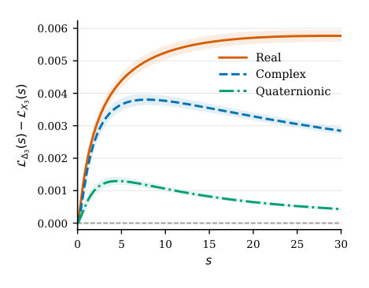
<figcaption class="paper-figure-caption"><b>Fig 1.</b> Figure 1. Monte Carlo comparison of the normalized determinantal benchmark ∆K 3 and normalized squared permanent XK 3 for 3×3 Ginibre matrices over K ∈{R, C, H}. Over H, the benchmark uses the Study determinant and the permanent is row-ordered. The estimates use 3×106 samples in each field; shaded bands show two standard errors. One Gaussian row is integrated out analytically.</figcaption>
</figure>
</div>

<p><strong>Summary.</strong> This theoretical paper proves the 'Anticoncentration' property for the permanent of Ginibre random matrices over real, complex, and quaternionic fields. By comparing the permanent to the determinant using advanced tools like Laplace transforms, it resolves a major conjecture (PACC) and establishes tight bounds on the distribution of this key random matrix observable.</p>
<p><strong>Why it may be interesting.</strong> While highly mathematical, random matrix theory is foundational to quantum physics, especially in characterizing spectral statistics and entanglement measures derived from Gaussian ensembles. The study of permanents versus determinants touches upon non-Gaussian correlations relevant in complex physical models.</p>
<details>
<summary>Detailed structure</summary>
<p><strong>Main problem.</strong> The paper addresses the 'Anticoncentration of the Permanent' for Ginibre ensembles, a problem related to the permanent Anticoncentration Conjecture (PACC). It seeks to establish bounds on the distribution of the normalized row-ordered permanent.</p>
<p><strong>Main result.</strong> For $K=\mathbb{C}$, the authors resolve the PACC by proving that the normalized permanent has a radial density with specific concentration bounds. They also established general anticoncentration results for $\mathbb{R}, \mathbb{C},$ and $\mathbb{H}$ fields.</p>
<p><strong>Method.</strong> The proof employs advanced techniques comparing the squared Gaussian permanent to the squared determinant in Laplace-transform order, utilizing inductive arguments and characteristic functions derived from properties of Gaussian distributions over different algebras ($\mathbb{R}, \mathbb{C}, \mathbb{H}$).</p>
<p><strong>Model / system.</strong> The model involves $n 	imes n$ random matrices ($G_n^{\mathbb{K}}$) whose entries are independent and identically distributed (i.i.d.) standard $\mathbb{K}$-Gaussian variables, where $\mathbb{K}$ can be the real ($\mathbb{R}$), complex ($\mathbb{C}$), or quaternionic ($\mathbb{H}$) numbers.</p>
<p><strong>Key observables.</strong> The normalized row-ordered permanent $W_n^{\mathbb{K}} = 	ext{per}_{\mathbb{K}}G_n^{\mathbb{K}}/\sqrt{n!}$, and its associated radial density $p_n^{\mathbb{K}}$.</p>
<p><strong>Important parameters / regimes.</strong> The dimension $eta = \dim_{\mathbb{R}}\mathbb{K} \in \{1, 2, 4\}$, and the matrix size $n$.</p>
<p><strong>Assumptions / limitations.</strong> The analysis relies heavily on comparing moments and distributions using Laplace transforms ($\le_{Lt}$), which is shown to be a strong tool but requires careful handling across different algebraic structures.</p>
<p><strong>Figures summary.</strong> Not specified, but notes mention Monte Carlo comparisons showing sign changes in CDF differences for $\Delta_K^3 - X_K^3$ versus non-negative signs for Laplace transform differences.</p>
<p><strong>Paper structure.</strong> The paper develops results by first establishing benchmarks using the determinant and Study determinant across different fields. It then uses inductive arguments, characteristic functions, and specialized comparison theorems (like Lemma C.5) to prove the anticoncentration bounds for the permanent itself.</p>
</details>
<details>
<summary>Abstract</summary>
<p>Let $\mathbb{K}\in\{\mathbb{R},\mathbb{C},\mathbb{H}\}$, put $β=\dim_{\mathbb{R}}\mathbb{K}$, and let $G_n^{\mathbb{K}}$ be an $n\times n$ matrix with i.i.d. standard $\mathbb{K}$-Gaussian entries, namely a standard $\mathbb{K}$-Ginibre matrix. We prove that the normalized row-ordered permanent $W_n^{\mathbb{K}}=\operatorname{per}_{\mathbb{K}}G_n^{\mathbb{K}}/\sqrt{n!}$ has a radial density $p_n^{\mathbb{K}}$ satisfying $\|p_n^{\mathbb{K}}\|_\infty=p_n^{\mathbb{K}}(0)\lesssim_βn^{(β+2)/4}$ and $\sup_{z\in\mathbb{K}}\mathbb{P}(|W_n^{\mathbb{K}}-z|\leq\varepsilon)\lesssim_βn^{(β+2)/4}\varepsilon^β$. In particular, for $\mathbb{K}=\mathbb{C}$, this resolves the Permanent Anticoncentration Conjecture of Aaronson and Arkhipov. The proof compares the squared Gaussian permanent with the squared (Study) determinant in Laplace-transform order.</p>
</details>
<p><sub><a href="#top">↑ back to top</a></sub></p>

<p><a id="paper-2607.20409"></a></p>
<h3 id="efficiently-simulable-pauli-correlation-encoding"><a href="http://arxiv.org/abs/2607.20409v1">Efficiently Simulable Pauli Correlation Encoding</a></h3>
<p><strong>Authors:</strong> Daniele Lizzio Bosco, Gabriel Matos, Chen-Yu Liu, Frederic Rapp, Fabian Finger, Enrico Rinaldi, Konstantinos Meichanetzidis<br>
<strong>Type:</strong> theory · <strong>Category:</strong> quantum information and computing · <strong>PDF:</strong> <a href="https://arxiv.org/pdf/2607.20409v1">https://arxiv.org/pdf/2607.20409v1</a><br>
<strong>Analysis basis:</strong> full PDF text, analyzed in chunks
<strong>Topic relevance:</strong> <code>quantum measurements</code> <strong>1/5</strong></p>
<div class="figure-strip-hint">↔ Scroll figures horizontally</div>
<div class="paper-figures-scroll">
<figure class="paper-figure-card">
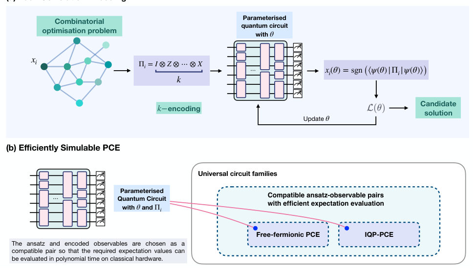
<figcaption class="paper-figure-caption"><b>Fig 1.</b> FIG. 1: Schematic comparison between standard PCE and efficiently simulable PCE. (a) In standard PCE, binary variables are encoded into Pauli observables, whose expectation values are evaluated using a parameterised quantum circuit and decoded into a candidate solution. (b) In efficiently simulable PCE, the ansatz family and encoded observables are chosen as a compatible pair so that all expectation values required for training and decoding can be evaluated in polynomial time on classical hardware. Free-fermionic PCE and IQP-PCE are two examples of such classically simulable realisations.</figcaption>
</figure>
<figure class="paper-figure-card">
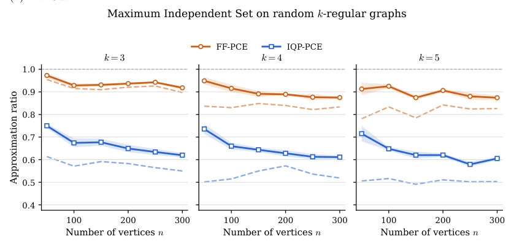
<figcaption class="paper-figure-caption"><b>Fig 2.</b> FIG. 2: Results on random k-regular graphs for k ∈{3, 4, 5}. Panel (a) reports MaxCut approximation ratios, while panel (b) reports Maximum Independent Set approximation ratios. Solid curves correspond to solutions after one greedy local-search pass, whereas dashed curves show the raw decoded solutions before local search. FF-PCE achieves consistently strong performance on both tasks, whereas IQP-PCE attains the best MaxCut results but exhibits a marked degradation on MIS.</figcaption>
</figure>
<figure class="paper-figure-card">
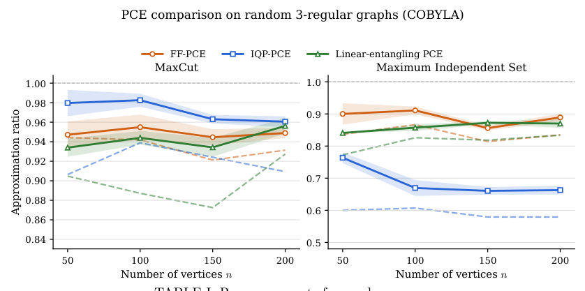
<figcaption class="paper-figure-caption"><b>Fig 3.</b> FIG. 3: Comparison between FF-PCE, IQP-PCE, and a linear-entangling PCE baseline on random 3-regular graphs, using COBYLA with 10 000 iterations for all methods. Left: MaxCut approximation ratios. Right: Maximum Independent Set approximation ratios. Solid curves report the post-local-search solution quality with shadowed area representing standard deviation, while dashed curves report the raw decoded solution before local search.</figcaption>
</figure>
<figure class="paper-figure-card">
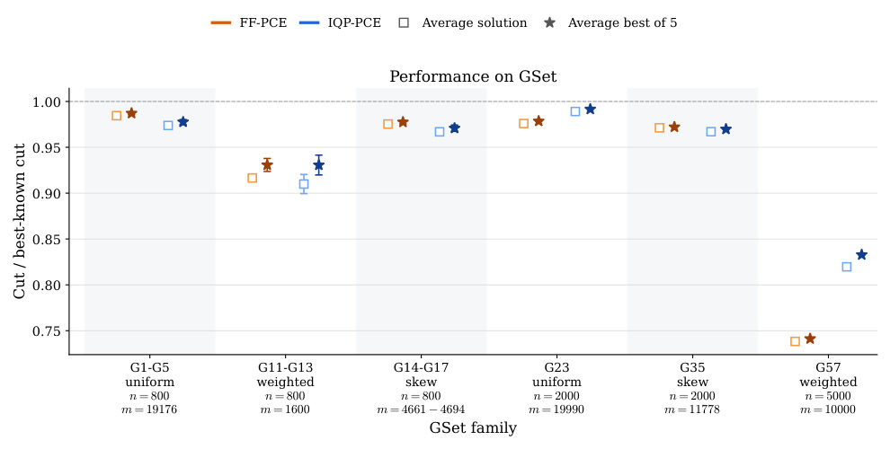
<figcaption class="paper-figure-caption"><b>Fig 4.</b> FIG. 4: Results on selected instances classes from GSet, corresponding to G1-G5, G11-G13, G14-G17, G23, G35, and G57. Boxes represent the average solution over 5 different runs and different instances; stars represent the average score of the best run for each instance. For instance families, lines represent the standard deviation between different instances. Finally, n and m corresponds to number of nodes and edges respectively in the corresponding class.</figcaption>
</figure>
<figure class="paper-figure-card">
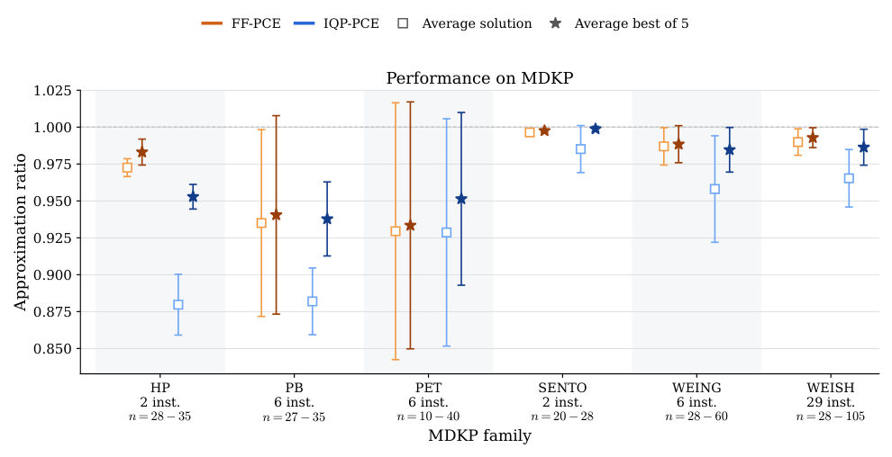
<figcaption class="paper-figure-caption"><b>Fig 5.</b> FIG. 5: Results on the SAC-94 Multi-Dimensional Knapsack Problem benchmark. Instances are grouped by family: HP, PB, PET, SENTO, WEING, and WEISH. Empty squares report the average approximation ratio over 5 independent runs, while stars report the average best solution found among those 5 runs. Error bars indicate the standard deviation across the corresponding family. All reported values are computed after feasibility repair and single-bit-flip local search. FF-PCE achieves consistently high solution quality across most families, while IQP-PCE is more variable but remains competitive on PET, SENTO, WEING, and WEISH.</figcaption>
</figure>
</div>

<p><strong>Summary.</strong> This paper tackles the measurement bottleneck in Pauli Correlation Encoding (PCE) by developing 'efficiently simulable' variants. These methods allow the necessary expectation values to be computed efficiently using free-fermionic or IQP circuits, rather than requiring costly quantum measurements. This work establishes a strong classical baseline for evaluating quantum approaches to hard combinatorial optimization problems.</p>
<p><strong>Why it may be interesting.</strong> The development of classically simulable quantum encoding schemes provides crucial theoretical tools for benchmarking the scaling and power of future quantum hardware implementations in optimization.</p>
<details>
<summary>Detailed structure</summary>
<p><strong>Main problem.</strong> The primary challenge addressed is the measurement overhead associated with Pauli Correlation Encoding (PCE) when estimating expectation values for combinatorial optimization problems.</p>
<p><strong>Main result.</strong> The authors introduce 'efficiently simulable PCE' variants, which allow all necessary expectation values to be computed classically, providing a powerful dequantized baseline for future quantum algorithm development.</p>
<p><strong>Method.</strong> They construct specific classes of Pauli correlation encodings using free-fermionic evolutions (via matchgate circuits) or IQP circuits, ensuring classical tractability of the required measurements.</p>
<p><strong>Model / system.</strong> The framework encodes classical binary variables into expectation values of many-body Pauli observables. The simulation is instantiated using free-fermionic Hamiltonians and general IQP ansatzes parameterized by rotations.</p>
<p><strong>Key observables.</strong> Signs of Pauli expectation values ($   ext{sgn}(\langle \Pi_i 
angle_  heta)$), the normalized merit factor ($
ho_F$), and solution quality on benchmarks like MaxCut and MDKP.</p>
<p><strong>Important parameters / regimes.</strong> The required precision $\epsilon$ dictates measurement cost, which is a key focus for improvement; problem sizes range from tens to thousands of variables.</p>
<p><strong>Assumptions / limitations.</strong> The core assumption is that the necessary expectation values can be generated by choosing a 'compatible pair' $(\Pi, U)$ such that classical simulation is efficient, bypassing costly quantum measurements.</p>
<p><strong>Figures summary.</strong> Figures compare FF-PCE and IQP-PCE performance on MaxCut and MDKP instances, showing competitive solution quality. Figure 8 specifically compares the approximate LABS merit factor ($
ho_F$) for different PCE variants against local search baselines.</p>
<p><strong>Paper structure.</strong> The paper first establishes the limitations of standard PCE due to measurement overhead. It then introduces and details the construction of efficiently simulable PCE using free-fermionic and IQP circuits. Finally, it benchmarks these methods on several combinatorial optimization problems (MaxCut, MDKP, LABS) to validate their performance.</p>
</details>
<details>
<summary>Abstract</summary>
<p>Pauli Correlation Encoding (PCE) is a heuristic framework for binary optimisation that encodes classical variables into many-body Pauli observables. While PCE requires fewer qubits than other approaches, it relies on estimating a large number of Pauli expectation values whose signs determine the variables' values, which can incur substantial measurement overhead. Here, we introduce efficiently simulable PCE, a class of dequantised PCE realisations where all expectation values needed can be computed efficiently classically. We instantiate this idea using free-fermionic evolutions, realised by matchgate circuits, and Instantaneous Quantum Polynomial (IQP) circuits. On MaxCut, Maximum Independent Set, Multi-Dimensional Knapsack, and Max3SAT benchmarks, these methods produce high-quality solutions across problem sizes ranging from tens to thousands of variables. Our results show that PCE is naturally understood as a correlation-based optimisation framework with both quantum and classically simulable realisations. This yields a dequantised baseline for evaluating future quantum PCE implementations.</p>
</details>
<p><sub><a href="#top">↑ back to top</a></sub></p>

<p><a id="paper-2607.20403"></a></p>
<h3 id="exact-static-exchange-benchmark-for-the-uniform-electron-gas-dynamic-kernel-tests-and-exchange-correlation-cancellation-near-2kf"><a href="http://arxiv.org/abs/2607.20403v1">Exact static exchange benchmark for the uniform electron gas: Dynamic-kernel tests and exchange-correlation cancellation near 2kF</a></h3>
<p><strong>Authors:</strong> Carl A. Kukkonen<br>
<strong>Type:</strong> theory · <strong>Category:</strong> strongly correlated electrons · <strong>PDF:</strong> <a href="https://arxiv.org/pdf/2607.20403v1">https://arxiv.org/pdf/2607.20403v1</a><br>
<strong>Analysis basis:</strong> full PDF text, analyzed in chunks
<strong>Topic relevance:</strong> <code>Keldysh / 2PI / non-Gaussian methods</code> <strong>1/5</strong></p>
<div class="figure-strip-hint">↔ Scroll figures horizontally</div>
<div class="paper-figures-scroll">
<figure class="paper-figure-card">
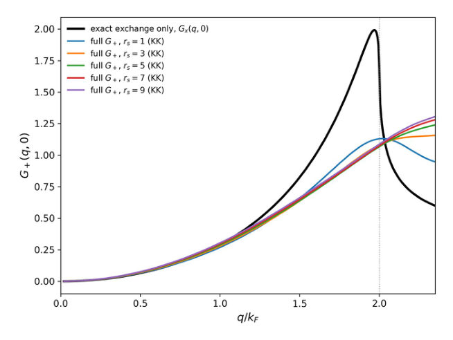
<figcaption class="paper-figure-caption"><b>Fig 1.</b> Fig. 1. Preview of the paper’s central result. The exact, universal static exchange-only local field factor Gx(q,0) (black, Eq. (5), derived in Section II) compared with the full G+(q,0) at rs = 1, 3, 5, 7, 9 from the Kaplan-Kukkonen QMC-consistent representation [4] (colored; same rs values and color coding as Fig. 4). Exchange alone produces a sharp peak near 2kF of magnitude 1.99, more than twice the height of the full result at every density shown, while the full G+ curves are mutually close and nearly flat across the whole band 0 ≤ q ≤ 2kF. Sections II–III establish Gx exactly and benchmark existing dynamic exchange kernels against it; Section IV works out the linear-response...</figcaption>
</figure>
<figure class="paper-figure-card">
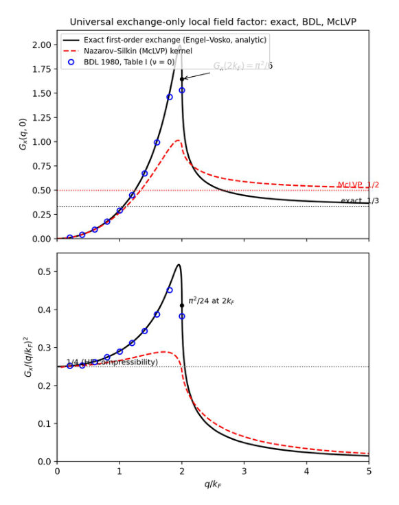
<figcaption class="paper-figure-caption"><b>Fig 2.</b> Fig. 2. Top: the exact universal static exchange-only local field factor Gx(q,0), Eq. (5) (solid), compared with the Nazarov-Silkin McLVP exchange kernel [14] (dashed; rs = 2 data shown, but both curves are universal). Open circles: the 1980 BDL tabulation (ν = 0 row of their Table I [9]). The exact value π2/6 at 2kF is marked; horizontal dotted lines show the exact large-q limit 1/3 and the McLVP limit 1/2. Bottom: Gx/(q/kF)2, showing the exact rise from the compressibility-sum-rule value 1/4 to π2/24 at 2kF; the exact kernel is far from flat.</figcaption>
</figure>
<figure class="paper-figure-card">
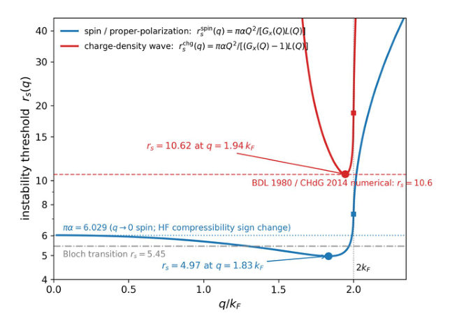
<figcaption class="paper-figure-caption"><b>Fig 3.</b> Fig. 3. Static local-kernel instability thresholds built from the exact adiabatic exchange kernel, Eq. (8), computed consistently at each wavevector from the exact closed form, Eq. (5). Spin channel (blue): minimum rs = 4.97 at q = 1.83kF; the dash-dotted line marks the Bloch transition rs = 5.45, and the dotted blue line the q →0 limit of the spin/proper-polarization condition, πα = 6.029, which is also the Hartree-Fock compressibility sign change; the charge condition has no long-wavelength solution. Charge channel (red): defined where Gx &gt; 1 (1.60kF &lt; q &lt; 2.05kF), minimum rs = 10.62 at q = 1.944kF, in agreement with the numerical minimum rs ≈ 10.6 near q = 1.94kF of BDL Fig. 2 [9]...</figcaption>
</figure>
<figure class="paper-figure-card">
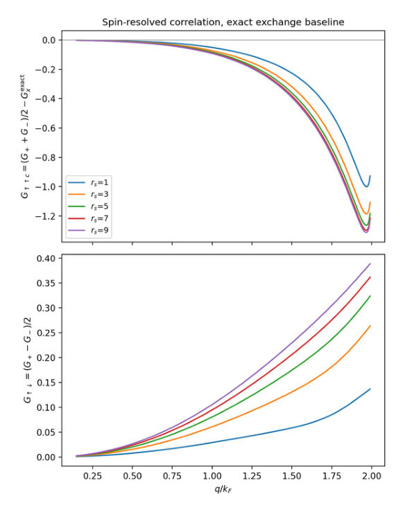
<figcaption class="paper-figure-caption"><b>Fig 4.</b> Fig. 4. Spin-resolved decomposition of the Kaplan-Kukkonen static local field factors [4] about the exact exchange baseline, Eq. (5), for rs = 1, 3, 5, 7, 9. Top: parallel-spin correlation contribution G↑↑c = (G+ + G−)/2 − Gx. Bottom: antiparallel-spin local field factor G↑↓= (G+ − G−)/2, which is pure correlation and shows no 2kF structure within the resolution and smoothness assumptions of the KK representation.</figcaption>
</figure>
</div>

<p><strong>Summary.</strong> This work establishes an exact theoretical benchmark for the static exchange-only local field factor in the uniform electron gas. By deriving this universal function, the authors critically test and demonstrate the quantitative failures of several established approximations (like BDL or McLVP) near the Fermi surface singularity at $2k_F$. The findings illuminate that observed physical behavior is governed by a precise cancellation between correlation and exchange effects.</p>
<p><strong>Why it may be interesting.</strong> While focused on electron gas theory, the rigorous benchmarking of correlation effects at finite momentum ($q 
eq 0$) provides fundamental insights into how screening modifies particle interactions, which is crucial for understanding correlated materials.</p>
<details>
<summary>Detailed structure</summary>
<p><strong>Main problem.</strong> To establish an exact, universal benchmark for the static local field factors of the uniform electron gas (UEG), particularly addressing unexplained features near $2k_F$.</p>
<p><strong>Main result.</strong> The paper derives and presents the exact exchange-only local field factor, $G_x(q,0)$, which shows specific limiting behaviors ($q^2/4$ at small $q$, $\pi^2/6$ at $2k_F$, and $1/3$ at large $q$).</p>
<p><strong>Method.</strong> The authors combine textbook local-field relations with exact static exchange polarizabilities derived from QMC calculations to construct a closed-form, universal benchmark.</p>
<p><strong>Model / system.</strong> The system is the Uniform Electron Gas (UEG), analyzed in the static limit ($\omega=0$) using density functional theory concepts applied to correlation functions.</p>
<p><strong>Key observables.</strong> Static local field factors ($G^+$), the exchange-only factor $G_x(q,0)$, and spin-resolved components of these factors.</p>
<p><strong>Important parameters / regimes.</strong> The wavevector $q$, normalized by $2k_F$ (using variable $Q$), and the density parameter $r_s$.</p>
<p><strong>Assumptions / limitations.</strong> The analysis assumes that QMC representations are smooth enough to reveal underlying systematic cancellations between correlation and exchange contributions.</p>
<p><strong>Figures summary.</strong> Figures compare the exact universal $G_x(q,0)$ against approximations from older theoretical kernels (BDL, McLVP), showing significant quantitative discrepancies in the comparison plots.</p>
<p><strong>Paper structure.</strong> The paper establishes the physical problem by noting unexplained features in QMC data; it then derives the exact benchmark formula for $G_x$; subsequently, it rigorously compares this benchmark against established approximations and analyzes the underlying cancellation mechanisms near $2k_F$.</p>
</details>
<details>
<summary>Abstract</summary>
<p>The static local field factors of the uniform electron gas are known accurately from quantum Monte Carlo (QMC) calculations, but two of their most striking features have lacked a mechanism: $G_+$ grows almost exactly as $q^2$ up to nearly $2k_F$, and the violent $2k_F$ physics of the Fermi surface leaves only a faint trace in it. Combining the textbook first-order local-field relation with the exact static exchange polarizability gives a compact exact benchmark: the universal exchange-only local field factor $G_x(q,0) = -I(Q)Q^2/L(Q)^2$, $Q = q/2k_F$, with exact values $(1/4)(q/k_F)^2$ at small $q$, $π^2/6$ at $2k_F$ -- apparently never before stated as a local-field value -- and $1/3$ at large $q$, giving the exchange-only spin-averaged contact value $g(0) = 1/2$ of the unpolarized gas (BDL 1977). $G_x$ rises to a finite maximum of 1.9924 at $1.9685k_F$ and passes through $π^2/6$ at exactly $2k_F$ with a slope diverging as $\ln^3|q-2k_F|$. Against this benchmark, the 1980 BDL tabulation is accurate to about one percent below $1.5k_F$, while the 2024 McLachlan-variational kernel of Nazarov and Silkin is two-percent accurate only below $0.5k_F$, is a factor of 1.74 low at $2k_F$, and its large-q limit is inconsistent with the contact constraint. A spin-resolved decomposition of QMC local field factors about the exact baseline shows that, within the resolution and smoothness assumptions of the QMC-based representations, both features follow from a strong exchange-correlation cancellation: at the QMC point closest to $2k_F$ ($q = 2.01k_F$, $r_s = 2$), correlation cancels 0.43(7) of the exact exchange value 1.33. Computed consistently at each wavevector, the static exchange-kernel thresholds derived from the closed form reproduce, to 0.2%, the finite-wavevector charge threshold $r_s \approx 10.6$ near $q = 1.94k_F$ obtained numerically in 1980, and recovered again in 2014.</p>
</details>
<p><sub><a href="#top">↑ back to top</a></sub></p>

<p><a id="paper-2607.20198"></a></p>
<h3 id="observable-geometry-for-effective-quantum-circuits"><a href="http://arxiv.org/abs/2607.20198v1">Observable Geometry for Effective Quantum Circuits</a></h3>
<p><strong>Authors:</strong> Huan-Hsin Tseng, Hsin-Yi Lin, Samuel Yen-Chi Chen, Yan Mong Chan, Tzu-Chieh Wei, Shinjae Yoo<br>
<strong>Type:</strong> both · <strong>Category:</strong> quantum information and computing · <strong>PDF:</strong> <a href="https://arxiv.org/pdf/2607.20198v1">https://arxiv.org/pdf/2607.20198v1</a><br>
<strong>Analysis basis:</strong> full PDF text, analyzed in chunks
<strong>Topic relevance:</strong> <code>entanglement &amp; information structure</code> <strong>1/5</strong></p>
<div class="figure-strip-hint">↔ Scroll figures horizontally</div>
<div class="paper-figures-scroll">
<figure class="paper-figure-card">
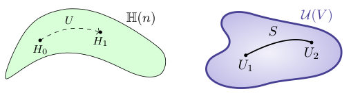
<figcaption class="paper-figure-caption"><b>Fig 1.</b> Fig. 1: [Left] Motions in observable space H(n) via a unitary. [Right] A subset of U(V ), giving a constant in map U 7→ U †HU for fixed H as (1), is identified by S in (2).</figcaption>
</figure>
<figure class="paper-figure-card">
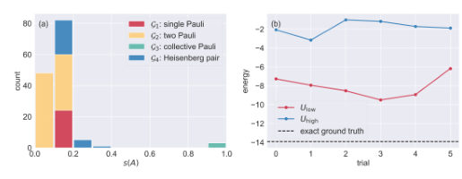
<figcaption class="paper-figure-caption"><b>Fig 2.</b> Fig. 2: (a) Distribution of s(A) for 4 families A ∈Gi. (b) VQE energy Eη(θ) for each trial. Ulow reaches lower energy than Uhigh (dashed line: ground state E0 ≈−13.92).</figcaption>
</figure>
</div>

<p><strong>Summary.</strong> This work develops a geometric framework using Lie group theory to analyze the redundancy inherent in Variational Quantum Circuits. By mapping the search space onto a homogeneous manifold defined by the stabilizer group of the Hamiltonian, it provides an explicit formula for the effective degrees of freedom. This theoretical insight is validated through numerical experiments on VQE optimization.</p>
<p><strong>Why it may be interesting.</strong> It provides rigorous mathematical tools (homogeneous space geometry) to quantify how much information is truly encoded in variational quantum circuits, which is crucial for designing efficient algorithms.</p>
<details>
<summary>Detailed structure</summary>
<p><strong>Main problem.</strong> The paper analyzes the redundancy and effectiveness of Variational Quantum Circuits (VQCs) by characterizing the geometry of the space of achievable effective Hamiltonians.</p>
<p><strong>Main result.</strong> The dimension of this effective Hamiltonian manifold is determined by the structure of a stabilizer group $S$, yielding $\dim(	ext{MH}) = \dim(U(V)) - \dim(S)$.</p>
<p><strong>Method.</strong> The authors use Lie group theory, identifying the space as a homogeneous quotient space ($S\setminus U(V)$), and employ spectral decompositions to derive tractable dimension formulas.</p>
<p><strong>Model / system.</strong> The model involves VQAs (like VQE) acting on an $n$-qubit system defined by a Hamiltonian $H$. The circuit search space is mapped onto the orbit space $    ext{MH}$ under unitary transformations.</p>
<p><strong>Key observables.</strong> Effective Hamiltonians ($  ext{MH}$), Stabilizer Group ($S$), and the Overlap Score $s(A)$ used to diagnose generator redundancy.</p>
<p><strong>Important parameters / regimes.</strong> The dimension of the system ($n$) and the structure/eigenspaces of the Hamiltonian $H$ (determining $\dim(S)$).</p>
<p><strong>Assumptions / limitations.</strong> The analysis relies heavily on treating the problem using the mathematical framework of Lie groups and homogeneous spaces.</p>
<p><strong>Figures summary.</strong> Figure 1 illustrates the geometric setup showing how unitary evolution maps observables, identifying the redundant component $S$. Figure 2 shows the distribution of overlap scores $s(A)$ for tested circuit generators.</p>
<p><strong>Paper structure.</strong> The paper first establishes the theoretical connection between observable redundancy and quotient spaces using Lie theory. It then derives dimension formulas based on the stabilizer group structure. Finally, it applies these concepts to a numerical VQE experiment, testing generator candidates using the overlap score $s(A)$.</p>
</details>
<details>
<summary>Abstract</summary>
<p>We study redundancy and effectiveness of Variational Quantum Circuits via algebraic and geometric views of Lie groups. Considering unitary transformations acting on Hermitian observables, a stabilizer group decomposition is given. Subsequently, we identify the Hermitian orbit with a quotient space of a symmetric space. Through this connection, we characterize the effective circuit degrees of freedom. Our approach of spectral decompositions and homogeneous spaces yields tractable calculation criteria, which are verified by numerical experiments.</p>
</details>
<p><sub><a href="#top">↑ back to top</a></sub></p>

<p><a id="paper-2607.19649"></a></p>
<h3 id="on-the-global-well-posedness-for-the-nonlocal-fokas-lenells-equation-with-the-weighted-sobolev-initial-data-on-the-line"><a href="http://arxiv.org/abs/2607.19649v1">On the global well-posedness for the nonlocal Fokas-Lenells equation with the weighted Sobolev initial data on the line</a></h3>
<p><strong>Authors:</strong> Zhenya Yan, Guoqiang Zhang, Guancheng Zhu<br>
<strong>Type:</strong> theory · <strong>Category:</strong> other · <strong>PDF:</strong> <a href="https://arxiv.org/pdf/2607.19649v1">https://arxiv.org/pdf/2607.19649v1</a><br>
<strong>Analysis basis:</strong> full PDF text, analyzed in chunks
<strong>Topic relevance:</strong> <code>non-equilibrium dynamics</code> <strong>1/5</strong></p>
<div class="figure-strip-hint">↔ Scroll figures horizontally</div>
<div class="paper-figures-scroll">
<figure class="paper-figure-card">
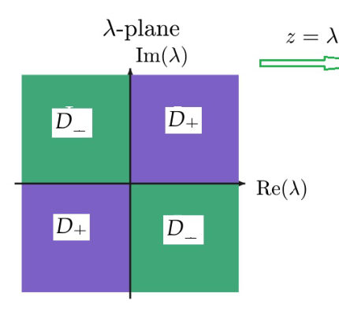
<figcaption class="paper-figure-caption"><b>Fig 1.</b> Figure 2: Analytical regions on the λ-plane (left) and z = λ2-plane (right).</figcaption>
</figure>
</div>

<p><strong>Summary.</strong> This paper proves the global well-posedness for the nonlocal Fokas-Lenells equation using an advanced Inverse Scattering Transform approach. The methodology involves solving associated Riemann-Hilbert problems and overcoming technical hurdles related to non-standard symmetries in the spectral problem. The result confirms that unique solutions exist globally in time, which is crucial for modeling physical systems like optical pulse propagation.</p>
<p><strong>Why it may be interesting.</strong> While focused on nonlinear PDEs rather than quantum dynamics directly, the use of advanced spectral methods (IST/RH problems) to prove long-time existence is a powerful mathematical tool applicable to analyzing complex quantum field theories or open quantum systems governed by integrable Hamiltonians.</p>
<details>
<summary>Detailed structure</summary>
<p><strong>Main problem.</strong> The primary goal is establishing the global well-posedness of the Cauchy problem for the reverse space-time nonlocal Fokas-Lenells (nFL) equation on the line.</p>
<p><strong>Main result.</strong> Global existence and uniqueness of solutions are proven, and the associated solution map is shown to be Lipschitz continuous on the admissible initial-data class.</p>
<p><strong>Method.</strong> The analysis heavily relies on developing an Inverse Scattering Transform (IST) framework formulated via associated Riemann-Hilbert (RH) problems and utilizing spectral uniformization transforms.</p>
<p><strong>Model / system.</strong> The model is the nonlocal Fokas-Lenells equation, $q_{xt} - q + iqq^{PT} = 0$, which generalizes integrable models like NLS and is relevant to modeling ultrashort optical pulses in nonlinear media.</p>
<p><strong>Key observables.</strong> The potential $q(x, t)$, reflection coefficients ($r_j$), and the associated scattering data are key observables used throughout the analysis.</p>
<p><strong>Important parameters / regimes.</strong> Weighted Sobolev initial data regularity: $q_0(x) \in H^3(\mathbb{R}) \cap H^{2,1}(\mathbb{R})$, and a quantitative smallness condition on the initial data is required for technical steps.</p>
<p><strong>Assumptions / limitations.</strong> The proof requires establishing uniform bounds on reflection coefficients by assuming a smallness condition on the initial potential, which ensures positive definiteness of the Hermitian part of the jump matrix.</p>
<p><strong>Figures summary.</strong> Figure 1 outlines the general scheme: direct scattering $
ightarrow$ time propagation $
ightarrow$ inverse scattering. Figure 2 details analytical regions in the spectral plane ($\lambda$-plane and $z=\lambda^2$-plane).</p>
<p><strong>Paper structure.</strong> The paper follows a standard IST approach: defining the direct scattering problem, constructing associated Riemann-Hilbert problems, developing the necessary transforms (like spectral uniformization), proving global reconstruction via controlled singular integral operators, and finally establishing the Lipschitz continuity of the solution map.</p>
</details>
<details>
<summary>Abstract</summary>
<p>We establish the global well-posedness of the Cauchy problem for the reverse space-time nonlocal Fokas-Lenells equation with the weighted Sobolev initial data $q_0(x)\in H^{3}(\mathbb{R}) \cap H^{2,1}(\mathbb{R})$ on the line. We develop the inverse scattering transform formulated via the associated Riemann-Hilbert problems to study this issue. A spectral uniformization transform is introduced to resolve the singular behavior inherent in the KN-type negative flow spectral problem. Owing to the reverse space-time reduction, reflection coefficients no longer satisfy the usual Hermitian conjugation symmetry, and the coercivity of the jump matrix is therefore not available a priori. The quantitative smallness condition on the initial data yields uniform bounds on the reflection coefficients and ensures the uniform positive definiteness of the Hermitian part of the associated jump matrix. The resulting coercivity allows us to establish the bounded invertibility of the associated singular integral operator through a Fredholm and vanishing-lemma argument. Under this condition, we prove an $L^{2}$-Sobolev bijective correspondence between the potential and scattering data, exclude spectral singularities on continuous spectra, and obtain the global existence and uniqueness of solutions. Moreover, the associated solution map is Lipschitz continuous on the admissible initial-data class.</p>
</details>
<p><sub><a href="#top">↑ back to top</a></sub></p>
<h2 id="other-papers-9">Other papers (9)</h2>
<p><em>Papers from primary archives without highlighted authors or any topic match. Click to expand.</em></p>
<details>
<summary>Show other papers</summary>

<p><a id="paper-2607.20225"></a></p>
<h3 id="dqaoa-gpt-ai-accelerated-distributed-quantum-optimization-for-combinatorial-problems"><a href="http://arxiv.org/abs/2607.20225v1">DQAOA-GPT: AI-Accelerated Distributed Quantum Optimization for Combinatorial Problems</a></h3>
<p><strong>Authors:</strong> Seongmin Kim, Abhinav Rijal, Yuri Alexeev, Nora Bauer, Martin Roetteler, Mina Yoon, George Siopsis, In-Saeng Suh<br>
<strong>Type:</strong> both · <strong>Category:</strong> quantum information and computing · <strong>PDF:</strong> <a href="https://arxiv.org/pdf/2607.20225v1">https://arxiv.org/pdf/2607.20225v1</a><br>
<strong>Analysis basis:</strong> full PDF text, analyzed in chunks</p>
<div class="figure-strip-hint">↔ Scroll figures horizontally</div>
<div class="paper-figures-scroll">
<figure class="paper-figure-card">
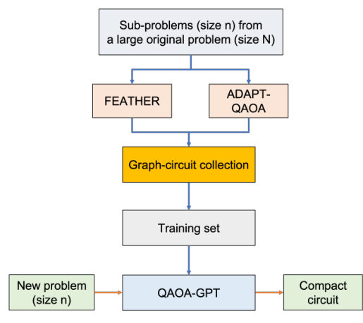
<figcaption class="paper-figure-caption"><b>Fig 1.</b> Fig. 1. Schematic illustration of the QAOA-GPT workflow.</figcaption>
</figure>
<figure class="paper-figure-card">
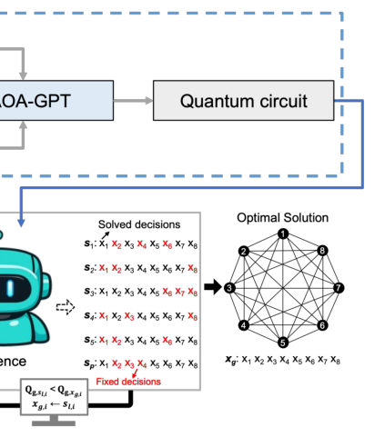
<figcaption class="paper-figure-caption"><b>Fig 2.</b> Fig. 2. Schematic illustration of the DQAOA-GPT workflow. Inspired by Refs. [13], [17]</figcaption>
</figure>
<figure class="paper-figure-card">
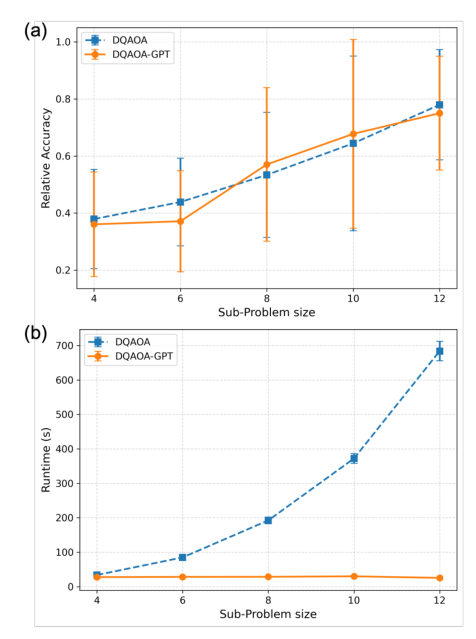
<figcaption class="paper-figure-caption"><b>Fig 3.</b> Fig. 3. DQAOA-GPT performance for different sub-problem sizes n. (a) Relative accuracy, and (b) runtime as a function of sub-problem size.</figcaption>
</figure>
</div>
<p><strong>Summary.</strong> This paper introduces DQAOA-GPT, a hybrid framework that accelerates solving hard combinatorial problems by replacing iterative quantum circuit optimization with direct circuit generation using a GPT model. By leveraging this AI acceleration during problem decomposition, the method drastically reduces computational cost while maintaining high solution quality for large-scale instances.</p>
<p><strong>Why it may be interesting.</strong> While focused on optimization rather than fundamental AMO physics, the reliance on quantum circuit generation via a generative AI model represents a novel computational paradigm that could accelerate simulations or parameter estimation in complex open quantum systems.</p>
<details>
<summary>Detailed structure</summary>
<p><strong>Main problem.</strong> Solving large-scale, NP-hard combinatorial optimization problems that are intractable using standard variational quantum algorithms.</p>
<p><strong>Main result.</strong> The proposed DQAOA-GPT significantly reduces the computational cost of solving sub-problems compared to conventional DQAOA while maintaining competitive solution quality, especially for larger problem sizes.</p>
<p><strong>Method.</strong> It integrates Distributed QAOA (DQAOA) with a GPT model that is trained to directly generate high-quality quantum circuits for decomposed sub-problems in a single inference pass.</p>
<p><strong>Model / system.</strong> The framework uses DQAOA to decompose the large optimization problem into smaller, manageable sub-problems. These sub-problems are then encoded onto graphs and solved using parameterized quantum circuits generated by the GPT model.</p>
<p><strong>Key observables.</strong> Solution quality (accuracy) and computational runtime/cost reduction relative to conventional DQAOA.</p>
<p><strong>Important parameters / regimes.</strong> Sub-problem size ($n$), number of variables ($N=100$ benchmark), and the depth/structure of the generated quantum circuits.</p>
<p><strong>Assumptions / limitations.</strong> The framework assumes that decomposing the problem into smaller, locally optimized sub-problems is sufficient for finding a near-optimal global solution. The GPT model replaces iterative optimization with direct generation.</p>
<p><strong>Figures summary.</strong> Figure 3 shows that DQAOA-GPT maintains relatively constant runtime while achieving improved relative accuracy as the sub-problem size ($n$) increases, contrasting sharply with standard DQAOA's rapidly increasing cost.</p>
<p><strong>Paper structure.</strong> The paper first establishes the difficulty of combinatorial optimization. It then details the DQAOA decomposition strategy and introduces the GPT training pipeline (tokenization, transformer architecture). Finally, it presents the inference loop where the generated circuits are used within the DQAOA framework for benchmarking.</p>
</details>
<details>
<summary>Abstract</summary>
<p>While combinatorial optimization problems are central to many scientific and engineering applications, their solution remains challenging due to exponentially large search spaces. Variational quantum algorithms offer a promising route for tackling such problems, yet their practical performance is limited by repeated quantum circuit evaluations and classical parameter updates. In this work, we introduce DQAOA-GPT, a hybrid framework that integrates the distributed quantum approximate optimization algorithm (DQAOA), which decomposes a large optimization problem into smaller sub-problems, with GPT-based quantum circuit generation for solving those sub-problems. Rather than relying on iterative variational optimization, the proposed approach uses a trained generative model to directly generate high-quality quantum circuits for the decomposed sub-problems. As a benchmark, we evaluate DQAOA-GPT against conventional DQAOA on dense HUBO optimization problems with up to 100 decision variables. The results demonstrate that DQAOA-GPT significantly reduces computational cost while maintaining competitive solution quality, with larger acceleration observed for larger sub-problem sizes. Although this work focuses on benchmark-scale validation, the framework provides a promising foundation for larger-scale combinatorial optimization in hybrid HPC-QC environments through increased GPU resources and parallel computing capability.</p>
</details>
<p><sub><a href="#top">↑ back to top</a></sub></p>

<p><a id="paper-2607.19506"></a></p>
<h3 id="hybrid-llm-guided-search-for-quantum-reservoir-architecture-design"><a href="http://arxiv.org/abs/2607.19506v1">Hybrid LLM-Guided Search for Quantum Reservoir Architecture Design</a></h3>
<p><strong>Authors:</strong> Krishna Bhatia, Gautami Sanjay Naik<br>
<strong>Type:</strong> both · <strong>Category:</strong> quantum information and computing · <strong>PDF:</strong> <a href="https://arxiv.org/pdf/2607.19506v1">https://arxiv.org/pdf/2607.19506v1</a><br>
<strong>Analysis basis:</strong> full PDF text, analyzed in chunks</p>
<div class="figure-strip-hint">↔ Scroll figures horizontally</div>
<div class="paper-figures-scroll">
<figure class="paper-figure-card">
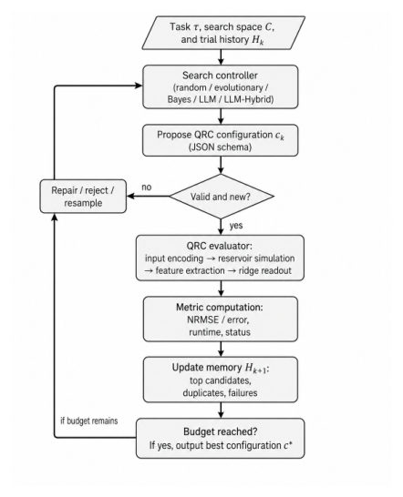
<figcaption class="paper-figure-caption"><b>Fig 1.</b> Fig. 1. Closed-loop QRC architecture-search workflow. A controller proposes schema-valid QRC configurations, the evaluator scores each candidate, and score feedback updates the search memory.</figcaption>
</figure>
<figure class="paper-figure-card">
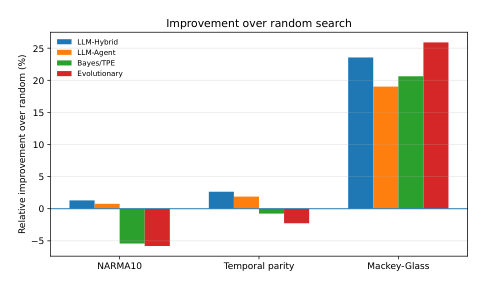
<figcaption class="paper-figure-caption"><b>Fig 2.</b> Fig. 2. Relative improvement over random search under the same evaluation budget. LLM-Hybrid improves over random search on all tasks, with the largest gain on Mackey-Glass.</figcaption>
</figure>
</div>
<p><strong>Summary.</strong> This paper treats Quantum Reservoir Computing (QRC) architecture design as an optimization problem and tests if Large Language Models can guide this search. By comparing various strategies, the authors show that combining LLM proposals with classical evolutionary operators yields superior performance on temporal forecasting tasks. The key takeaway is that LLMs are powerful high-level controllers when integrated into robust, hybrid optimization frameworks.</p>
<p><strong>Why it may be interesting.</strong> It explores the intersection of advanced AI (LLMs) with quantum information processing hardware simulation, providing a methodology for automating the design space exploration crucial for near-term quantum machine learning applications.</p>
<details>
<summary>Detailed structure</summary>
<p><strong>Main problem.</strong> The paper addresses how to optimize the complex design choices inherent in Quantum Reservoir Computing (QRC) by framing it as a constrained black-box architecture search problem.</p>
<p><strong>Main result.</strong> A hybrid approach combining Large Language Model (LLM) proposals with classical optimization operators significantly outperforms random search, demonstrating that LLMs are useful high-level controllers rather than universal optimizers for QRC design.</p>
<p><strong>Method.</strong> The authors developed a simulator-based benchmark comparing several search policies—including Random Search, Evolutionary Search, TPE, and an LLM-Hybrid agent—to optimize QRC parameters across three temporal forecasting tasks.</p>
<p><strong>Model / system.</strong> The core system is Quantum Reservoir Computing (QRC), which utilizes fixed quantum dynamics to generate a high-dimensional feature map for subsequent classical readout. The search space involves numerous architectural choices like qubit count, reservoir depth, and entanglement topology.</p>
<p><strong>Key observables.</strong> Task-level predictive performance scores (error rates) on three benchmarks: NARMA10, Mackey-Glass forecasting, and temporal parity.</p>
<p><strong>Important parameters / regimes.</strong> Qubit range (3–8), Reservoir Depth (1–12), various encoding/topology parameters, and a fixed evaluation budget of 25 evaluations.</p>
<p><strong>Assumptions / limitations.</strong> The study is confined to simulator-based benchmarks using small reservoirs and does not claim quantum advantage or hardware performance; the improvement relies on embedding LLMs within validated hybrid search loops.</p>
<p><strong>Figures summary.</strong> Figures illustrate the closed-loop QRC architecture-search workflow, comparing mean/standard deviation results across tasks (Table II), and showing relative error improvements over random search (Fig. 2).</p>
<p><strong>Paper structure.</strong> The paper introduces the problem by defining QRC's design complexity, presents the simulator benchmark framework, compares five distinct search policies using three temporal tasks, analyzes performance metrics, and concludes with architectural insights regarding LLM utility.</p>
</details>
<details>
<summary>Abstract</summary>
<p>Quantum reservoir computing (QRC) uses fixed quantum dynamics as a high-dimensional temporal feature map and trains only a lightweight classical readout. QRC is attractive for near-term quantum machine learning, but its performance depends strongly on architecture choices such as input encoding, reservoir depth, entanglement topology, measurement features, state-reset policy, feature construction, and readout regularization. We introduce \method, a simulator-based benchmark that formulates QRC design as constrained black-box architecture search and evaluates whether large language models can act as proposal controllers for this search problem. The benchmark compares five policies under identical evaluation budgets: random search, evolutionary search, Bayesian/TPE optimization, a feedback-based LLM agent, and \hybrid, which combines LLM proposals with memory, mutation, crossover, duplicate avoidance, and exploration. On NARMA10, Mackey-Glass forecasting, and temporal parity, \hybrid{} is the most consistent policy: it ranks first on NARMA10 and temporal parity and second on Mackey-Glass, narrowly behind evolutionary search. Under a 25-evaluation budget and three seeds, \hybrid{} improves over random search on all tasks, including a 23.6\% relative reduction in Mackey-Glass error. The results do not show that LLMs are universal QRC optimizers; rather, they show that generative models can be useful high-level controllers when embedded inside validated, reproducible hybrid search loops.</p>
</details>
<p><sub><a href="#top">↑ back to top</a></sub></p>

<p><a id="paper-2607.20130"></a></p>
<h3 id="learning-to-decode-quantum-ldpc-codes-via-cluster-based-sequential-belief-propagation"><a href="http://arxiv.org/abs/2607.20130v1">Learning to Decode Quantum LDPC Codes via Cluster-Based Sequential Belief Propagation</a></h3>
<p><strong>Authors:</strong> Mohsen Moradi, Taejoon Kim, Rémi A. Chou, David G. M. Mitchell<br>
<strong>Type:</strong> theory · <strong>Category:</strong> quantum information and computing · <strong>PDF:</strong> <a href="https://arxiv.org/pdf/2607.20130v1">https://arxiv.org/pdf/2607.20130v1</a><br>
<strong>Analysis basis:</strong> full PDF text, analyzed in chunks</p>
<div class="figure-strip-hint">↔ Scroll figures horizontally</div>
<div class="paper-figures-scroll">
<figure class="paper-figure-card">
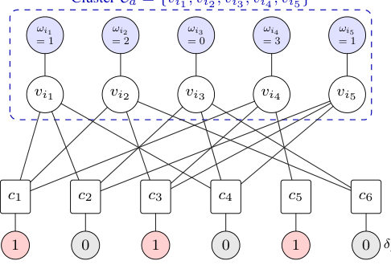
<figcaption class="paper-figure-caption"><b>Fig 1.</b> Fig. 1. Tanner subgraph used in Example 1. The highlighted cluster Ca = {vi1, . . . , vi5} is connected to checks c1, . . . , c6 according to the listed neighbor sets. The values below the check nodes are the current residual mismatches δj, and the circles above the variable nodes show the induced local mismatch weights ωik.</figcaption>
</figure>
<figure class="paper-figure-card">
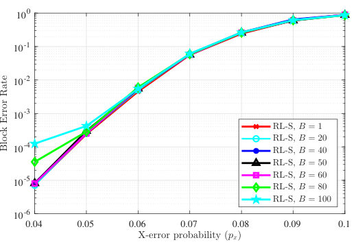
<figcaption class="paper-figure-caption"><b>Fig 2.</b> Fig. 2. Block error rate of clustered RL-S decoding for the [[882, 24, 18 ≤ d ≤24]] code B1 over the independent Pauli-X channel. Different cluster sizes B are compared under the same maximum iteration budget T = 100.</figcaption>
</figure>
<figure class="paper-figure-card">
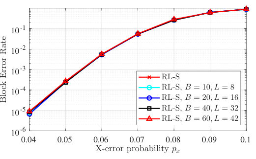
<figcaption class="paper-figure-caption"><b>Fig 3.</b> Fig. 4. Effect of the quantization resolution on clustered RL-S decoding for the [[882, 24, 18 ≤d ≤24]] code B1 over the independent Pauli-X channel. The iteration budget is fixed at T = 100, while B and L are varied. The RL-S baseline (B = 1) uses the original exact VN-level state, whereas all B &gt; 1 curves use the quantized histogram state.</figcaption>
</figure>
<figure class="paper-figure-card">
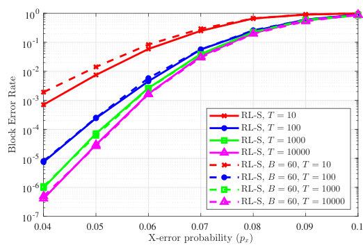
<figcaption class="paper-figure-caption"><b>Fig 4.</b> Fig. 3. Block error rate for the [[882, 24, 18 ≤d ≤24]] code B1 over the independent Pauli-X channel. The unclustered RL-S decoder is compared with clustered RL-S using cluster size B = 60 for several iteration budgets.</figcaption>
</figure>
<figure class="paper-figure-card">
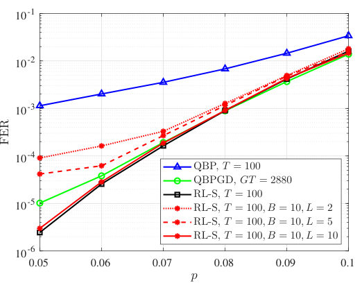
<figcaption class="paper-figure-caption"><b>Fig 5.</b> Fig. 5. Block error rate comparison for the [[288, 12, 18]] BB code over the depolarizing channel. The proposed quantized clustered RL-S decoder is compared with QBP, QBPGD, and the unclustered RL-S decoder. The RL-S and clustered RL-S decoders use maximum iteration budget T = 100, while QBPGD uses 288 guided-decimation rounds with T = 10 BP iterations per round, i.e., total budget GT = 2880.</figcaption>
</figure>
</div>
<p><strong>Summary.</strong> This paper introduces a cluster-based extension to Reinforcement Learning (RL) for optimizing Belief Propagation (BP) decoding of QLDPC codes. By allowing the RL agent to select and update entire clusters of nodes in parallel, it significantly reduces the serial scheduling depth compared to node-by-node updates. This achieves an attractive balance between high error correction performance and low computational latency.</p>
<p><strong>Why it may be interesting.</strong> This work directly addresses efficiency bottlenecks in quantum error correction decoding by introducing hardware-aware parallelism into an ML-driven scheduling framework, which is highly relevant for implementing fault-tolerant quantum computation protocols.</p>
<details>
<summary>Detailed structure</summary>
<p><strong>Main problem.</strong> The performance of Belief-Propagation (BP) decoding for Quantum Low-Density Parity-Check (QLDPC) codes is limited by short cycles and degeneracy, and existing learned scheduling methods suffer from poor within-iteration parallelism.</p>
<p><strong>Main result.</strong> The proposed cluster-based RL approach preserves most of the error-rate benefit of fine-grained sequential scheduling while substantially reducing the number of required scheduling decisions per BP iteration, offering a superior latency-parallelism tradeoff.</p>
<p><strong>Method.</strong> The authors extend Reinforcement Learning (RL) by partitioning Variable Nodes (VNs) into clusters. The RL agent selects an entire cluster to update in parallel, using a quantized, permutation-invariant histogram state representation for the Markov Decision Process.</p>
<p><strong>Model / system.</strong> The work focuses on decoding QLDPC codes used in fault-tolerant quantum computation. Decoding involves message passing over a Tanner graph structure defined by parity-check matrices.</p>
<p><strong>Key observables.</strong> Error rate (Block Error Rate/BER) vs. physical error probability ($p_x$), and the number of scheduling decisions required per BP iteration.</p>
<p><strong>Important parameters / regimes.</strong> Cluster size ($B$), quantization resolution ($L$), and the total iteration budget ($T$).</p>
<p><strong>Assumptions / limitations.</strong> The analysis assumes an ideal parallel cluster-update model for performance gains, and that a quantized state representation is sufficient to capture necessary scheduling information.</p>
<p><strong>Figures summary.</strong> Figures compare BER across various decoders (QBP, unclustered RL-S, clustered RL-S) showing that the clustered approach maintains high performance while drastically reducing the required number of scheduling decisions per iteration compared to the unclustered baseline.</p>
<p><strong>Paper structure.</strong> The paper first identifies the limitations of standard BP and existing sequential RL methods. It then proposes the cluster-based extension, detailing the state representation (histogram/quantization) and formulating the problem as a cluster-level MDP. Finally, it presents numerical results demonstrating the improved latency-parallelism tradeoff.</p>
</details>
<details>
<summary>Abstract</summary>
<p>Belief-propagation (BP) decoding for quantum low-density parity-check (QLDPC) codes is attractive due to its low complexity, but its performance is often limited by short cycles, degeneracy, and convergence failures. Recently, reinforcement-learning-based sequential variable-node (VN) scheduling (RL-S) was shown to improve BP decoding by learning state-dependent update orders. However, the VN-by-VN nature of that approach offers limited within-iteration parallelism, since only one VN is updated at a time. In this paper, we propose a cluster-based extension of RL-S for QLDPC codes. The VNs are partitioned into fixed clusters, and at each scheduling step the RL agent selects one cluster to update, after which all VNs in that cluster are updated in parallel using the same pre-update incoming messages. To keep the tabular state space practical for large cluster sizes, we introduce a permutation-invariant cluster state based on a normalized histogram of local mismatch weights, followed by quantization. This representation makes the number of cluster states depend on the quantization resolution rather than the cluster size. We also develop the corresponding cluster-level Markov decision process, reward function, and Q-learning update. Numerical results on representative QLDPC codes show that the proposed clustered learned scheduling preserves most of the error-rate benefit of VN-level learned sequential scheduling while substantially reducing the number of scheduling decisions per BP iteration, thereby providing an attractive latency-parallelism tradeoff.</p>
</details>
<p><sub><a href="#top">↑ back to top</a></sub></p>

<p><a id="paper-2607.19611"></a></p>
<h3 id="on-solutions-of-the-killingbeck-potential-and-clarifying-comments-on-a-related-analytical-approach"><a href="http://arxiv.org/abs/2607.19611v1">On Solutions of the Killingbeck Potential and Clarifying Comments on a Related Analytical Approach</a></h3>
<p><strong>Authors:</strong> Fatma Zohra Khaled, Mustafa Moumni, Mokhtar Falek<br>
<strong>Type:</strong> theory · <strong>Category:</strong> other · <strong>PDF:</strong> <a href="https://arxiv.org/pdf/2607.19611v1">https://arxiv.org/pdf/2607.19611v1</a><br>
<strong>Analysis basis:</strong> full PDF text, analyzed in chunks</p>
<div class="figure-strip-hint">↔ Scroll figures horizontally</div>
<div class="paper-figures-scroll">
<figure class="paper-figure-card">
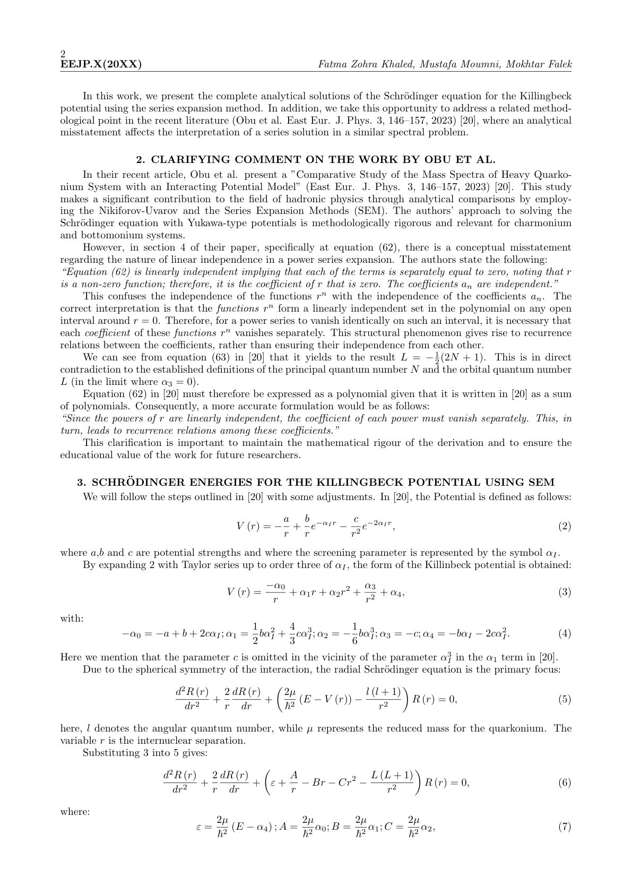
<figcaption class="paper-figure-caption"><b>Fig 1.</b> Low-resolution page preview, page 2</figcaption>
</figure>
<figure class="paper-figure-card">
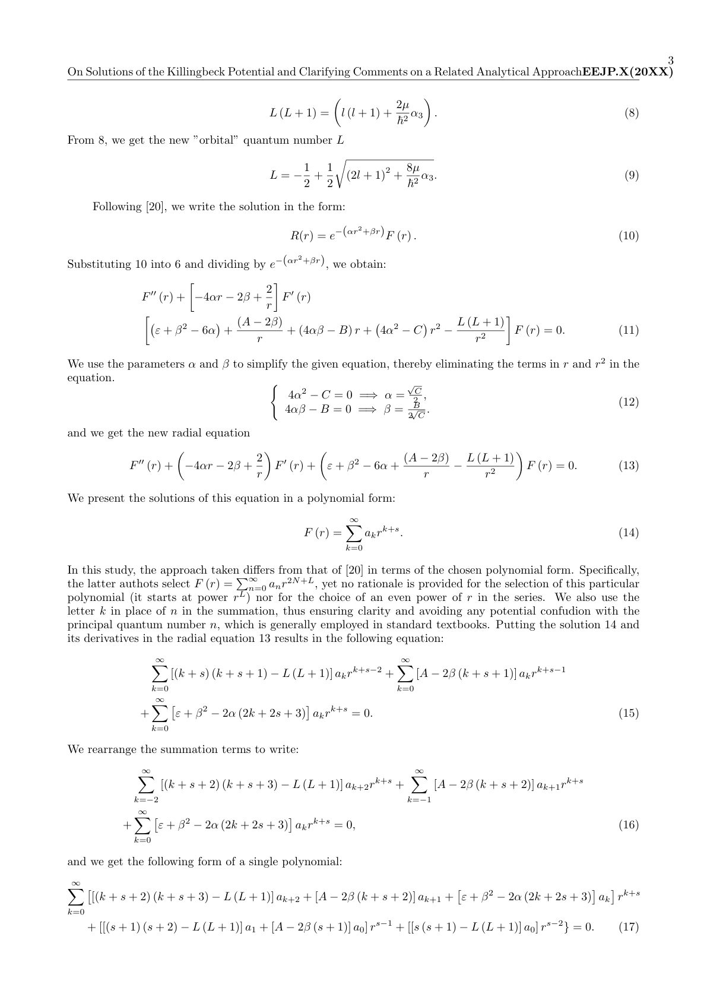
<figcaption class="paper-figure-caption"><b>Fig 2.</b> Low-resolution page preview, page 3</figcaption>
</figure>
<figure class="paper-figure-card">
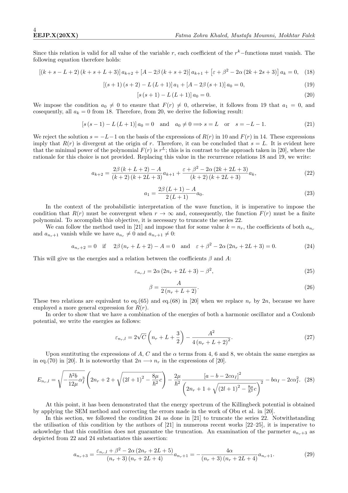
<figcaption class="paper-figure-caption"><b>Fig 3.</b> Low-resolution page preview, page 4</figcaption>
</figure>
<figure class="paper-figure-card">
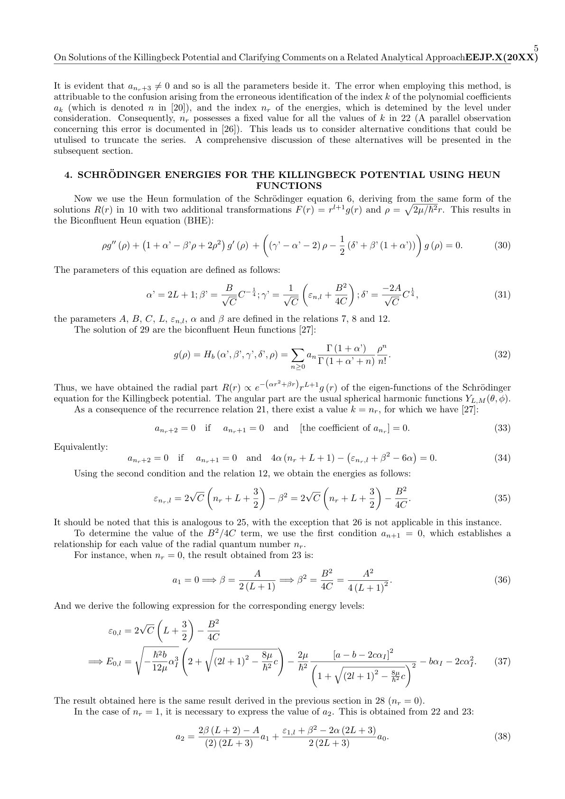
<figcaption class="paper-figure-caption"><b>Fig 4.</b> Low-resolution page preview, page 5</figcaption>
</figure>
<figure class="paper-figure-card">
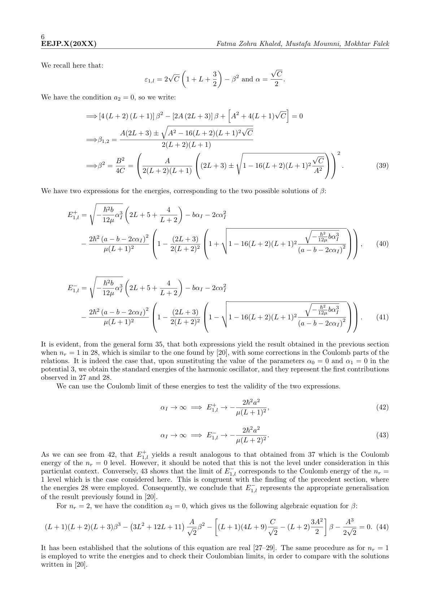
<figcaption class="paper-figure-caption"><b>Fig 5.</b> Low-resolution page preview, page 6</figcaption>
</figure>
</div>
<p><strong>Summary.</strong> This paper presents detailed analytical solutions to the Schrödinger equation using the Killingbeck potential, which combines Coulombic, linear, and harmonic terms. The authors employ sophisticated series expansion methods and compare results with Biconfluent Heun Equation formalisms to determine energy eigenvalues. Crucially, they also correct mathematical misstatements found in previous academic treatments of similar quantum systems.</p>
<p><strong>Why it may be interesting.</strong> This work provides rigorous analytical solutions for a complex confining potential relevant to heavy quark systems, offering advanced mathematical techniques applicable to non-standard quantum potentials beyond simple Coulomb or harmonic forms.</p>
<details>
<summary>Detailed structure</summary>
<p><strong>Main problem.</strong> The work focuses on deriving analytical solutions for the Schrödinger equation using a specific hybrid potential (Killingbeck potential) and correcting mathematical errors in related literature.</p>
<p><strong>Main result.</strong> The authors derive explicit expressions for bound-state solutions and eigenfunctions, yielding energy eigenvalues that match expected limits when analyzed through multiple formalisms.</p>
<p><strong>Method.</strong> The primary method involves the series expansion technique applied to the radial Schrödinger equation, supplemented by comparison with Biconfluent Heun Equation (BHE) formulations.</p>
<p><strong>Model / system.</strong> The system is governed by the Killingbeck potential, $V(r) = -A/r + Br + Cr^2$, which models physical scenarios like quarkonium spectroscopy and hydrogen-like atoms in plasma environments.</p>
<p><strong>Key observables.</strong> Energy eigenvalues ($\epsilon_{n,l}$), bound-state solutions, and eigenfunctions for the system.</p>
<p><strong>Important parameters / regimes.</strong> Potential parameters (A, B, C) and quantum numbers ($L$, $n$).</p>
<p><strong>Assumptions / limitations.</strong> The derivation assumes a specific polynomial form for the solution function $F(r)$ and relies on setting coefficients of powers of $r$ to zero.</p>
<p><strong>Paper structure.</strong> The paper first introduces the physical problem and the master equation, then details the series expansion method leading to recurrence relations. It presents multiple derivations for energy eigenvalues (series truncation vs. BHE) before concluding with corrections to prior literature.</p>
</details>
<details>
<summary>Abstract</summary>
<p>The work presents analytical solutions to the Schrodinger equation for the Killingbeck potential, a Hybrid model combining harmonic, linear and Coulomb terms, and which is also an approximate model of Yukawa-type potentials. The radial Schrodinger equation is solved by means of the series expansion method, thus yielding the exact expressions of both bound-states solutions and eigen-functions for the systems; these systems include quarkonium and confined hydrogen-like atoms in plasma environments. Furthermore, we offer a constructive commentary on the work of Obu et al. (East Eur. J. Phys. 3, 146-157, 2023), with the aim of clarifying a mathematical misstatement used in their analytical treatment of analogous systems.</p>
</details>
<p><sub><a href="#top">↑ back to top</a></sub></p>

<p><a id="paper-2607.20391"></a></p>
<h3 id="qoreo-choreographic-programming-for-quantum-distributed-systems"><a href="http://arxiv.org/abs/2607.20391v1">Qoreo: Choreographic Programming for Quantum Distributed Systems</a></h3>
<p><strong>Authors:</strong> Jennifer Paykin, Steven Baldasty, Joseph P. Near, Christian Skalka<br>
<strong>Type:</strong> theory · <strong>Category:</strong> quantum information and computing · <strong>PDF:</strong> <a href="https://arxiv.org/pdf/2607.20391v1">https://arxiv.org/pdf/2607.20391v1</a><br>
<strong>Analysis basis:</strong> full PDF text, analyzed in chunks</p>
<div class="figure-strip-hint">↔ Scroll figures horizontally</div>
<div class="paper-figures-scroll">
<figure class="paper-figure-card">
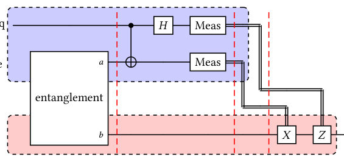
<figcaption class="paper-figure-caption"><b>Fig 1.</b> Fig. 1. Quantum teleportation protocol as an informal quantum circuit diagram. Alice starts with an arbitrary qubit 𝑞, and by the end of the protocol, Bob should have a qubit in that same state. Dashed vertical red lines separate the protocol into four stages. Stage 1: Alice and Bob establish a pair of entangled qubits 𝑎and 𝑏. Stage 2: Alice performs some local operations (controlled-not, hadamard (H)) to entangle her starting qubit 𝑞 with 𝑎; she then measures both qubits, resulting in two classical bits (indicated with double wires). Stage 3: Alice sends the two classical bits to Bob over ordinary classical channels. Stage 4: Bob uses the classical messages to correct his remaining qubit...</figcaption>
</figure>
<figure class="paper-figure-card">
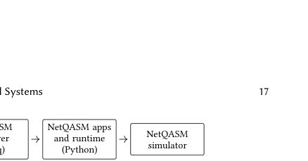
<figcaption class="paper-figure-caption"><b>Fig 2.</b> Fig. 11. Extraction pipeline from a global Qoreo choreography to simulation using NetQASM.</figcaption>
</figure>
<figure class="paper-figure-card">
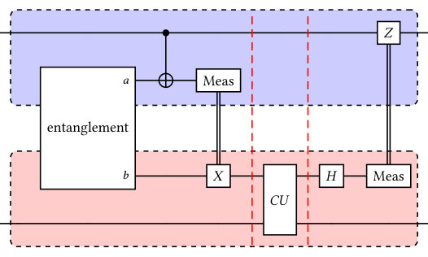
<figcaption class="paper-figure-caption"><b>Fig 3.</b> Fig. 12. Distributed protocol for implementing a 2-qubit controlled-unitary [27], broken up into three stages.</figcaption>
</figure>
<figure class="paper-figure-card">

<figcaption class="paper-figure-caption"><b>Fig 4.</b> Fig. 13. An implementation of an 𝑛-controlled gate distributed across 𝑛actors. The function distributed_n_CU takes as input a list of actors 𝐴with qubit variables 𝑞𝑠, and a single target actor 𝐵 with qubit 𝑡𝑔𝑡. The goal of the protocol is to apply the input controlled unitary 𝐶𝑈to the controls 𝑞𝑠and target 𝑡𝑔𝑡. The helper functions fmap and fmap2 fold over the input lists and concatenate the results together, e.g. stage1 returns a pair of variables and fmap As qs stage1 returns a list of pairs of variables, which we split up into a pair of lists using List.split. Note that although fmap/fmap2 iterate sequentially through the actors in 𝐴𝑠, the Delay rule of choreographies ensures that...</figcaption>
</figure>
</div>
<p><strong>Summary.</strong> This paper introduces Qoreo, a novel choreographic programming language designed to simplify and formalize the development of complex quantum distributed protocols. By viewing the entire system as one global choreography rather than many independent processes, it ensures type safety and guarantees deadlock freedom. This provides a powerful, high-level abstraction layer for designing reliable quantum network applications.</p>
<p><strong>Why it may be interesting.</strong> While focused on high-level programming semantics rather than physical Hamiltonian dynamics, the rigorous type-theoretic guarantees for distributed operations are crucial for designing reliable quantum network protocols that might interact with AMO platforms.</p>
<details>
<summary>Detailed structure</summary>
<p><strong>Main problem.</strong> Programming distributed quantum systems requires coordinating complex sequences of operations, making direct process modeling tedious and error-prone.</p>
<p><strong>Main result.</strong> The authors introduce Qoreo, a choreographic programming language that guarantees type safety and projects to deadlock-free process networks for well-typed protocols.</p>
<p><strong>Method.</strong> They propose a choreographic paradigm where the entire protocol is viewed as a single global program, which is then formally projected onto independent processes using Endpoint Projection (EPP).</p>
<p><strong>Model / system.</strong> The model involves quantum distributed systems utilizing qubits and incorporating local quantum computation with inter-actor classical and quantum communication.</p>
<p><strong>Key observables.</strong> Deadlock freedom, well-defined quantum operations, and the successful execution of protocols like Quantum Key Distribution (B92).</p>
<p><strong>Important parameters / regimes.</strong> The complexity scales exponentially with the number of qubits; linear types enforce physical constraints like no-cloning.</p>
<p><strong>Assumptions / limitations.</strong> The primary limitation noted is that choreographies lack room for actor autonomy, complicating security analysis and dynamic participation.</p>
<p><strong>Figures summary.</strong> Figures illustrate quantum teleportation protocols both as informal circuits and as global choreographies, contrasting this with the process model view.</p>
<p><strong>Paper structure.</strong> The paper builds from defining the state-of-the-art in distributed quantum computing to formalizing Qoreo's local quantum language (with linear types), developing the full choreographic language, defining EPP, and finally discussing implementation via extraction to NetQASM.</p>
</details>
<details>
<summary>Abstract</summary>
<p>Programming distributed quantum systems requires multiple actors to coordinate precise sequences of quantum operations, classical communication, and entanglement generation. Writing such protocols directly as distributed processes is tedious and error-prone, and subtle mismatches can cause deadlock or silently incorrect quantum states. We present Qoreo, a choreographic programming language for quantum distributed systems in which an entire protocol is expressed as single, global program (a choreography) rather than as a collection of independent actor processes. Qoreo includes a local quantum language with linear types that enforce the no-cloning principle; a choreographic language that combines local quantum computation with inter-actor classical and quantum communication; and a process language for individual network nodes. We prove type safety for choreographies, guaranteeing that well-typed programs implement well-defined quantum operations, and we define endpoint projection~(EPP), which automatically derives a network of independent processes from any choreography. We prove EPP sound and complete with respect to the choreographic semantics; as a corollary, every well-typed choreography projects to a deadlock-free process network. The metatheory of Qoreo is fully mechanized in Rocq, and we provide an extraction pipeline to NetQASM for simulation and deployment on quantum network hardware.</p>
</details>
<p><sub><a href="#top">↑ back to top</a></sub></p>

<p><a id="paper-2607.19574"></a></p>
<h3 id="quantum-codes-from-classical-annealing"><a href="http://arxiv.org/abs/2607.19574v1">Quantum codes from classical annealing</a></h3>
<p><strong>Authors:</strong> Michael A. Perlin, Matthew Steinberg, Ben Criger<br>
<strong>Type:</strong> theory · <strong>Category:</strong> quantum information and computing · <strong>PDF:</strong> <a href="https://arxiv.org/pdf/2607.19574v1">https://arxiv.org/pdf/2607.19574v1</a><br>
<strong>Analysis basis:</strong> full PDF text, analyzed in chunks</p>
<div class="figure-strip-hint">↔ Scroll figures horizontally</div>
<div class="paper-figures-scroll">
<figure class="paper-figure-card">
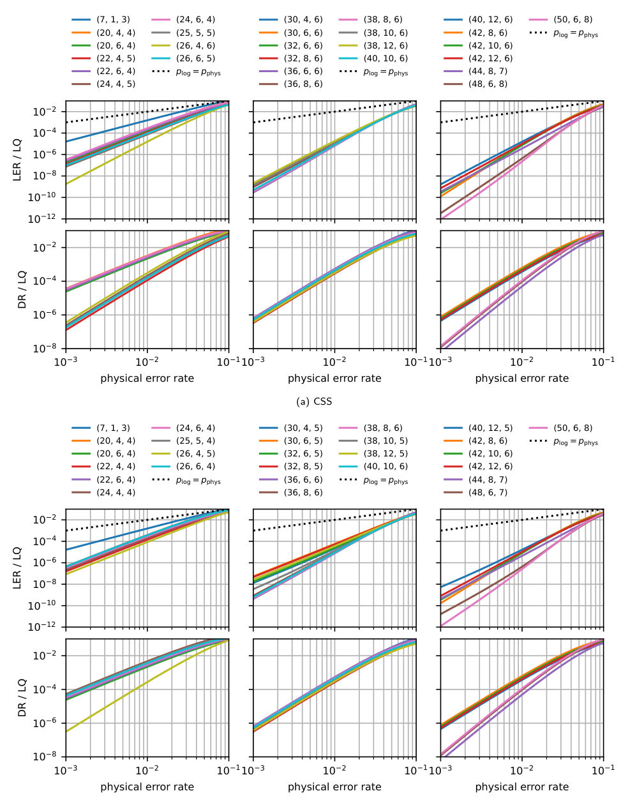
<figcaption class="paper-figure-caption"><b>Fig 1.</b> Figure 1: Logical error rates (LER) and discard rates (DR) per logical qubit (LQ) for the codes in Table 1 in a code-capacity noise model with a lookup table decoder. The decoder declares failure (triggering a discard) if it observes a syndrome that cannot be caused by any error of weight w &lt; d/2. The physical error rate corresponds to the IID probability that each qubit is subject to a randomly chosen X, Y , or Z error.</figcaption>
</figure>
<figure class="paper-figure-card">
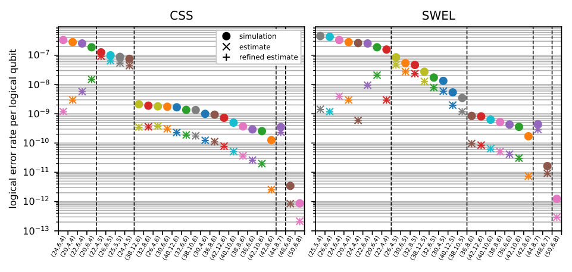
<figcaption class="paper-figure-caption"><b>Fig 2.</b> Figure 2: Logical error rates from Fig. 1 and corresponding estimates computed with Eq. (34) and Eq. (42) at a physical error rate of pdep = 10−3. Codes are sorted first by distance, and then by logical error rate. Colors match Fig. 1.</figcaption>
</figure>
</div>
<p><strong>Summary.</strong> This paper introduces an adaptive simulated annealing method to efficiently search for high-performing quantum error-correcting codes, focusing on CSS and SWEL types. By optimizing a surrogate energy function related to logical error rates, the authors discover state-of-the-art codes whose parameters approach theoretical bounds. These findings provide promising candidates for building fault-tolerant quantum computation circuits.</p>
<p><strong>Why it may be interesting.</strong> This work directly addresses fundamental resource limitations in quantum computation by providing concrete constructions of highly efficient error-correcting codes suitable for near-term hardware demonstrations.</p>
<details>
<summary>Detailed structure</summary>
<p><strong>Main problem.</strong> The primary goal is searching for quantum error-correcting codes that possess both high encoding rates and large distances.</p>
<p><strong>Main result.</strong> The authors found state-of-the-art CSS and SWEL codes whose distances meet or exceed the quantum Gilbert-Varshamov bound for small block lengths (up to 50 qubits).</p>
<p><strong>Method.</strong> An adaptive simulated annealing algorithm is employed, guided by an energy function that approximates the logical error rate in a code-capacity noise model.</p>
<p><strong>Model / system.</strong> The work focuses on quantum stabilizer codes, specifically CSS codes and a subclass called SWEL codes. These are defined over physical qubits and characterized by their parity check matrices ($H$).</p>
<p><strong>Key observables.</strong> Code distance ($d$), encoding rate ($k/n$), and the ability of logical gates to be implemented transversally.</p>
<p><strong>Important parameters / regimes.</strong> Block lengths up to 50 physical qubits; code parameters $(n, k, d)$; quantum Gilbert-Varshamov bound variants.</p>
<p><strong>Assumptions / limitations.</strong> The search relies on simulated annealing as a heuristic optimization technique due to the exponentially large space of possible codes. The search for automorphisms in related work is noted as non-exhaustive.</p>
<p><strong>Paper structure.</strong> The paper introduces the problem, reviews theoretical bounds (Hamming, QGV), details the adaptive simulated annealing optimization strategy using an energy function surrogate, and presents results on finding high-performing CSS and SWEL codes.</p>
</details>
<details>
<summary>Abstract</summary>
<p>We introduce an adaptive simulated annealing algorithm to search for moderately-sized quantum error-correcting codes with high encoding rates and large distances. Our search targets two classes of stabilizer codes: (1) CSS codes, and (2) a subclass of CSS codes that we call ``self-dual with equivalent logicals'' (SWEL) codes, the latter of which which admit transversal implementations of logical Hadamard and phase gates that can be leveraged to construct fault-tolerant gate sets. The search is guided by an energy function that acts as a surrogate for the logical error rate in a code-capacity noise model, combining code distance with a count of minimum-weight logical operators to resolve the discrete plateaux that impede naïve distance optimization. For block lengths of up to $50$ physical qubits, our search finds state-of-the-art CSS and SWEL codes whose distances frequently meet or exceed the variants of the quantum Gilbert-Varshamov bound. In addition to providing favorable seed codes for fault-tolerant architectures based on code concatenation, the codes found in this work are promising candidates for high-rate code demonstrations on near-term quantum computing hardware.</p>
</details>
<p><sub><a href="#top">↑ back to top</a></sub></p>

<p><a id="paper-2607.19602"></a></p>
<h3 id="quantum-gravity-simulation-quantum-simulation-with-a-minimum-length-based-on-the-generalised-uncertainty-principle"><a href="http://arxiv.org/abs/2607.19602v1">Quantum Gravity Simulation: Quantum simulation with a minimum length based on the generalised uncertainty principle</a></h3>
<p><strong>Authors:</strong> Jack Keable-Elliott, David J. Bacon, Andrew Burbanks, Jaewoo Joo<br>
<strong>Type:</strong> theory · <strong>Category:</strong> other · <strong>PDF:</strong> <a href="https://arxiv.org/pdf/2607.19602v1">https://arxiv.org/pdf/2607.19602v1</a><br>
<strong>Analysis basis:</strong> full PDF text, analyzed in chunks</p>
<div class="figure-strip-hint">↔ Scroll figures horizontally</div>
<div class="paper-figures-scroll">
<figure class="paper-figure-card">
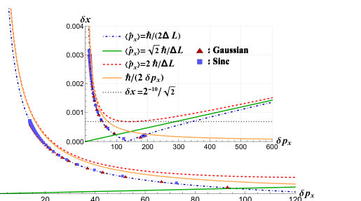
<figcaption class="paper-figure-caption"><b>Fig 1.</b> FIG. 1. Low-energy GUP curves from Eqs. (8) to (10) with ∆L = 2−10 and ℏ= 0.1. The marked data are the results of numerical quantum simulation with ⟨ˆpx⟩= ℏ/(2∆L) ≈51.2 under Eq. (8) for Gaussian- and sinc-like wavefunctions. The minimum length (δx)min = 2−10/ √</figcaption>
</figure>
<figure class="paper-figure-card">
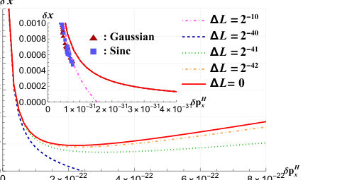
<figcaption class="paper-figure-caption"><b>Fig 2.</b> FIG. 2. High-energy GUP curves for an electron using differ- ent qubit numbers L = 10, 40, 41, 42 and ∞. For ∆L = 2−10, the data for the high-energy GUP are given by the Gaussian- and sinc-type wavefunctions with a deformed high-energy mo- mentum operator corresponding to the relativistic one.</figcaption>
</figure>
<figure class="paper-figure-card">
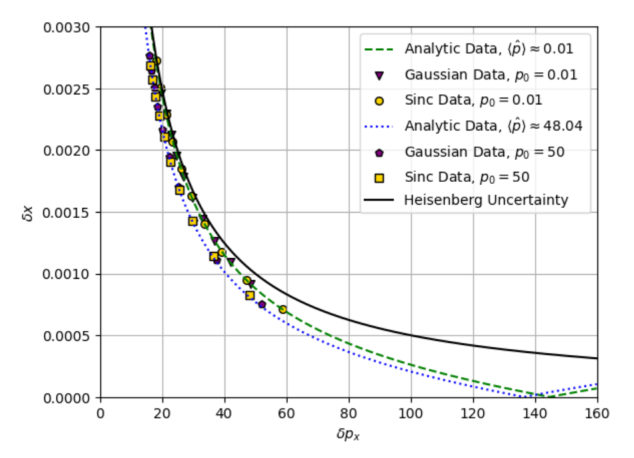
<figcaption class="paper-figure-caption"><b>Fig 3.</b> FIG. 3. Low-energy GUP curves using 10 qubits with ∆L = 2−10 and ℏ= 0.1. For the Gaussian wavefunction (sinc wavefunction), the choice of σ (a) ranges from 0.001 to 0.0025 (0.003 to 0.01) for p0 = 0.01, and from 0.001 to 0.005 (0.004 to 0.017) for p0 = 50.</figcaption>
</figure>
<figure class="paper-figure-card">
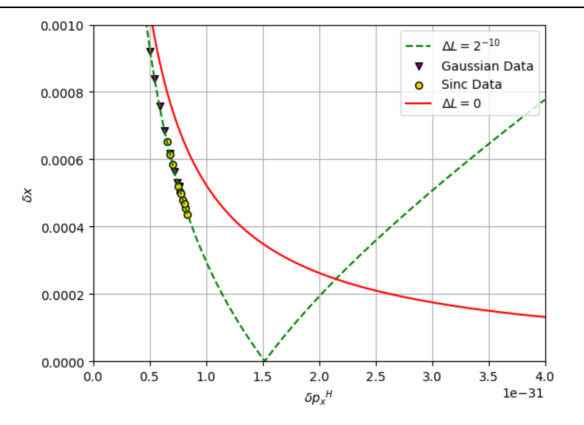
<figcaption class="paper-figure-caption"><b>Fig 4.</b> FIG. 4. High-energy GUP curve with ∆L = 2−10 [m] and ∆L = 0 for ⟨ˆpx⟩= 0, ℏ= 1.05 × 10−34 [kg m2/s], m = me = 9.11 × 10−31 [kg], c = 3 × 108 [m/s]. For the Gaussian state, the choice of σ ranges from 0.0001 to 0.0009 while, for the sinc state, the choice of a ranges from 0.0001 to 0.0025.</figcaption>
</figure>
</div>
<p><strong>Summary.</strong> This paper proposes a simulation recipe using qubits to study how minimum length scales, derived from the Generalized Uncertainty Principle (GUP), affect quantum systems. By analyzing low- and high-energy limits on a discretized grid, the authors reveal unique dependencies on the lattice spacing ($\Delta L$). The work offers a computational tool to test theoretical predictions about quantum gravity effects.</p>
<p><strong>Why it may be interesting.</strong> The systematic incorporation of finite lattice spacing into fundamental quantum relations like the uncertainty principle provides a concrete, computational method to explore regimes inaccessible by standard continuum theory in quantum gravity.</p>
<details>
<summary>Detailed structure</summary>
<p><strong>Main problem.</strong> The paper develops a framework to simulate quantum gravity phenomena by analyzing the Generalized Uncertainty Principle (GUP) in both low- and high-energy regimes.</p>
<p><strong>Main result.</strong> It establishes that incorporating finite grid spacing ($\Delta L$) leads to distinct GUP behaviors, suggesting novel pathways to investigate minimum length effects at high energies, though conflicts arise when enforcing consistency with special relativity versus preserving the standard HUP.</p>
<p><strong>Method.</strong> The authors use a first-quantization approach on a discretized spatial grid ($L$ qubits) to derive discrete position and momentum operators, allowing for systematic calculation of expectation values under GUP corrections.</p>
<p><strong>Model / system.</strong> The model analyzes one-dimensional quantum systems using localized ansatz states (Gaussian/sinc) simulated via qubit representations. The core physics revolves around modifying the standard uncertainty relation due to hypothesized minimum length scales from quantum gravity.</p>
<p><strong>Key observables.</strong> Position uncertainty ($\delta x$), momentum uncertainty ($\delta p_x$ and $\delta p_x^H$), and the resulting GUP inequality $(\delta x)(\delta p) \geq \dots$.</p>
<p><strong>Important parameters / regimes.</strong> Minimum grid spacing ($\Delta L$), low/high energy regimes, mass ($m$), and fundamental constants ($\hbar$, $c$).</p>
<p><strong>Assumptions / limitations.</strong> The analysis assumes a finite $\Delta L 
eq 0$ for simulation purposes; approximations are made using Taylor expansions when deriving the high-energy momentum operator ($\hat{p}_{H x}$).</p>
<p><strong>Figures summary.</strong> Figure 1 compares low-energy GUP curves from simulation data (Gaussian/sinc states) against theoretical lines. Figure 2 shows mass-dependent high-energy GUP properties for an electron using varying qubit numbers.</p>
<p><strong>Paper structure.</strong> The paper proceeds by first establishing the low-energy GUP effects due to discretization ($\Delta L$), then developing a procedure for high-energy momentum operators ($\hat{p}_{H x}$), and finally analyzing the resulting high-energy GUP, highlighting conflicts between relativistic consistency and HUP preservation.</p>
</details>
<details>
<summary>Abstract</summary>
<p>We present a recipe for simulating one-dimensional quantum systems for low and high energies with $L$ qubits within the framework of first quantisation. Assuming a minimum grid spacing $ΔL$ in the finite-difference method, the generalised uncertainty principle (GUP) is derived analytically and shows distinct properties for low- and high-energy quantum systems. In the low-energy regime, the GUP approaches to the standard Heisenberg uncertainty principle (HUP) for $ ΔL \ll \hbar$. However, for finite $ΔL \neq 0$, the GUP mathematically provides three different regions dependent on the average momentum and suggests that a wavefunction can exhibit a single-point localisation at the finite momentum uncertainty due to lack of grid resolution. We then derive a new expression for the high-energy momentum and focus on two specific cases relevant to relativistic aspects. First, if the HUP is relaxed and the high-energy momentum is matched to the special-relativistic one, the resulting GUP predicts the existence of a minimum length with non-zero mass for high energy despite the continuous limit $ΔL = 0$. Second, enforcing consistency with the HUP allows the recovery of a canonical high-energy representation with no minimum length. But this requirement brings incompatibility with the special-relativistic momentum and suggests a modified energy-momentum equation. Therefore, we believe that the proposed momentum formulation provides a novel pathway to investigate quantum gravity phenomena for high energy using quantum simulation tools.</p>
</details>
<p><sub><a href="#top">↑ back to top</a></sub></p>

<p><a id="paper-2607.20168"></a></p>
<h3 id="quantum-kernels-and-the-cross-section-of-stock-returns-anatomy-of-a-vanishing-advantage"><a href="http://arxiv.org/abs/2607.20168v1">Quantum Kernels and the Cross-Section of Stock Returns: Anatomy of a Vanishing Advantage</a></h3>
<p><strong>Authors:</strong> Junchi Shen<br>
<strong>Type:</strong> theory · <strong>Category:</strong> other · <strong>PDF:</strong> <a href="https://arxiv.org/pdf/2607.20168v1">https://arxiv.org/pdf/2607.20168v1</a><br>
<strong>Analysis basis:</strong> full PDF text, analyzed in chunks</p>
<div class="figure-strip-hint">↔ Scroll figures horizontally</div>
<div class="paper-figures-scroll">
<figure class="paper-figure-card">
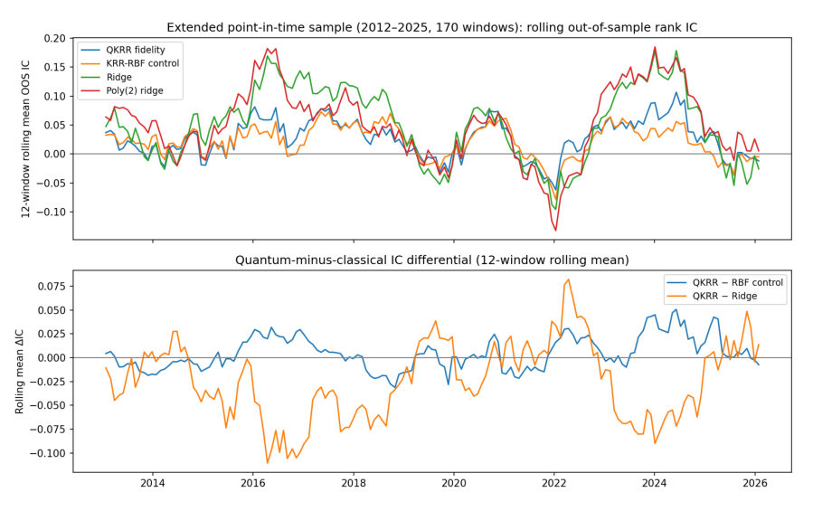
<figcaption class="paper-figure-caption"><b>Fig 1.</b> Figure 1: Main evaluation, 170 windows. Top: 12-window rolling mean out-of-sample rank IC. Bottom: rolling quantum-minus-classical IC differentials.</figcaption>
</figure>
<figure class="paper-figure-card">
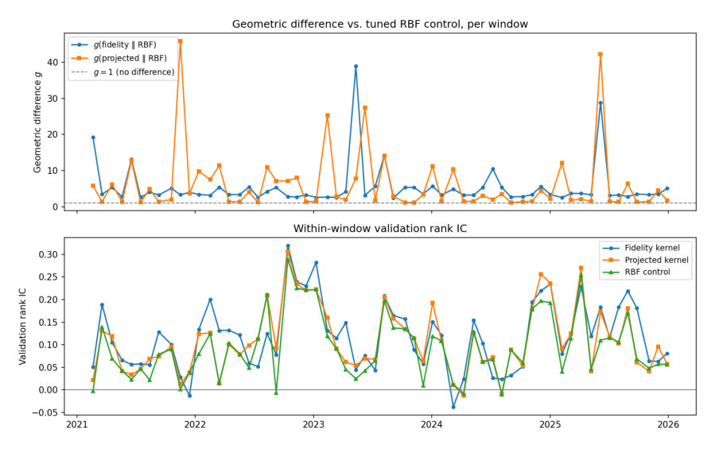
<figcaption class="paper-figure-caption"><b>Fig 2.</b> Figure 2: Short-sample study, 60 windows. Top: regularized geometric difference g between quantum kernels and the tuned RBF control. Bottom: within-window validation rank ICs of the three kernels.</figcaption>
</figure>
</div>
<p><strong>Summary.</strong> This paper rigorously tests if quantum kernels can predict stock returns better than classical methods using financial time series. The authors find that apparent quantum advantages are artifacts of flawed testing protocols, such as using hindsight data or unequal training budgets. They propose strict standards for future empirical claims of quantum advantage in complex systems.</p>
<p><strong>Why it may be interesting.</strong> While applied to finance, the methodology—developing strict protocol standards for claiming 'quantum advantage' in empirical data—is highly relevant to any field where theoretical quantum predictions meet noisy, real-world measurements (e.g., characterizing subtle effects in condensed matter experiments).</p>
<details>
<summary>Detailed structure</summary>
<p><strong>Main problem.</strong> The study investigates whether quantum kernels provide a genuine, exploitable advantage over established classical machine learning methods for predicting cross-sectional stock returns.</p>
<p><strong>Main result.</strong> Under rigorous, point-in-time evaluation protocols with sufficient statistical power, no statistically significant quantum advantage was found; penalized linear models consistently outperformed or matched the quantum kernel performance.</p>
<p><strong>Method.</strong> The authors employed a 'kernel-swap control' protocol, comparing Quantum Kernel Ridge Regression (QKRR) against classical controls like RBF kernels and linear regressions using walk-forward out-of-sample testing on financial data.</p>
<p><strong>Model / system.</strong> The system is the Chinese A-share stock market return cross-section. The models involve quantum encoding via an IQP-style layer to generate a fidelity kernel, which is then compared against classical kernels and linear predictors.</p>
<p><strong>Key observables.</strong> Information Coefficient (IC), $\Delta$IC difference, $p$-values, Sharpe ratio, and the performance of various regression models over 170 walk-forward windows.</p>
<p><strong>Important parameters / regimes.</strong> The evaluation is highly sensitive to protocols: point-in-time universes, budget equalization, and multiplicity correction are critical parameters for determining significance.</p>
<p><strong>Assumptions / limitations.</strong> The primary assumption tested is that the market structure allows for a stable, exploitable quantum advantage; the paper concludes this assumption is likely false due to methodological artifacts in prior literature.</p>
<p><strong>Figures summary.</strong> Figures compare rolling IC differentials between quantum and classical kernels, showing how apparent advantages vanish when accounting for sample size or budget constraints.</p>
<p><strong>Paper structure.</strong> The paper establishes the problem by testing QKRR against controls. It then details rigorous evaluation protocols (kernel-swap, point-in-time) across many windows, systematically debunking spurious quantum advantages through statistical corrections and diagnostic analyses of kernel geometry vs. out-of-sample gains.</p>
</details>
<details>
<summary>Abstract</summary>
<p>Do quantum kernels improve cross-sectional stock return prediction? We run a controlled horse race on the Chinese A-share market in which a quantum fidelity kernel, a projected quantum kernel, and a classical RBF control share identical training subsamples, solver, and tuning budgets, so that only the kernel is exchanged. On the main evaluation -- a point-in-time universe and 170 walk-forward windows (2012-2025) -- no quantum advantage exists: the fidelity kernel is indistinguishable from its RBF control ($Δ$IC $=+0.005$, $p=0.42$), and a $2\times2$ design crossing kernel type with training budget (a Nystrom extension to the full ~38,000-observation windows) shows quantum kernels matching, but never beating, equal-budget linear models; after family-wise correction no pairwise difference among eleven models is significant, with point estimates favoring penalized linear regressions throughout. We then document how the opposite conclusion arises: a 60-window evaluation on a universe screened with full-sample information makes the same quantum kernel appear dominant on stability criteria and significantly better than neural baselines. Interaction characteristics from the anomalies literature help nothing, quantum or classical; a widened bandwidth grid reveals an interior optimum rather than the near-classical endpoint a coarse grid suggests; and the geometric difference, while large throughout ($g \gg 1$), does not predict out-of-sample gains ($ρ=-0.20$). We propose protocol standards -- kernel-swap controls, budget-equalized comparisons, point-in-time universes, and multiplicity-robust inference -- for empirical claims of quantum advantage in finance.</p>
</details>
<p><sub><a href="#top">↑ back to top</a></sub></p>

<p><a id="paper-2607.20104"></a></p>
<h3 id="schrodingers-real-valued-equation-revisited"><a href="http://arxiv.org/abs/2607.20104v1">Schrödinger's real-valued equation revisited</a></h3>
<p><strong>Authors:</strong> Oliver Passon, Bernd Rosenow<br>
<strong>Type:</strong> theory · <strong>Category:</strong> other · <strong>PDF:</strong> <a href="https://arxiv.org/pdf/2607.20104v1">https://arxiv.org/pdf/2607.20104v1</a><br>
<strong>Analysis basis:</strong> full PDF text, analyzed in chunks</p>
<div class="figure-strip-hint">↔ Scroll figures horizontally</div>
<div class="paper-figures-scroll">
<figure class="paper-figure-card">
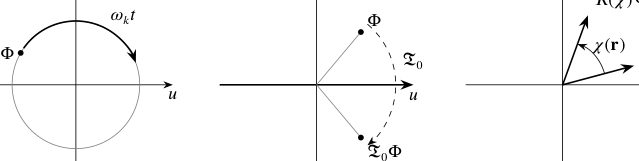
<figcaption class="paper-figure-caption"><b>Fig 1.</b> Figure 1: The local real phase plane (𝑢, 𝜋∕ℏ) at a fixed point. (a) Free evolution rotates every energy mode clockwise at its frequency 𝜔𝑘= 𝐸𝑘∕ℏ, drawn for 𝐸𝑘&gt; 0 (Sec. 5.3); the Born density is the squared radius 𝑢2 + 𝜋2∕ℏ2, the conserved 𝐴2 𝑘of each mode. (b) Spinless time reversal 𝔗0 ∶(𝑢, 𝜋) ↦(𝑢, −𝜋) is the reflection in the 𝑢-axis – the real form of complex conjugation (Sec. 10). (c) A gauge transformation rotates the pair by the position-dependent angle 𝜒(𝐫), Eq. (145), while the vector potential shifts as 𝐴𝑖↦𝐴𝑖+ (ℏ∕𝑞) 𝜕𝑖𝜒, Eq. (149).</figcaption>
</figure>
</div>
<p><strong>Summary.</strong> This paper rigorously examines attempts to reformulate quantum mechanics using only real variables instead of the standard complex wave function. It demonstrates that while the explicit imaginary unit can be absorbed or hidden, the underlying mathematical structure—the symplectic form—must persist. The necessity of this structure is highlighted by analyzing failures in single-field reductions when magnetic fields are introduced.</p>
<p><strong>Why it may be interesting.</strong> This work is highly relevant as it probes the fundamental mathematical structure underpinning quantum theory, touching upon gauge symmetries and the geometric interpretation of complex numbers in physical observables.</p>
<details>
<summary>Detailed structure</summary>
<p><strong>Main problem.</strong> The paper investigates whether quantum mechanics, typically formulated with a complex wave function ($\psi$), can be equivalently described using purely real-valued variables.</p>
<p><strong>Main result.</strong> While the explicit imaginary unit ($i$) can be removed or hidden in specific formulations (like Majorana fields), the underlying symplectic and complex structure it encodes must reappear, often manifesting as non-local relations or canonical partners.</p>
<p><strong>Method.</strong> The authors employ mathematical reduction techniques by splitting $\psi = u+iv$ into real components, comparing this to phase-space reconstructions, and analyzing specialized formulations like those involving Majorana fields.</p>
<p><strong>Model / system.</strong> The study applies to general quantum mechanical systems governed by the Hamiltonian ($\hat{H}$), examining both non-relativistic (Schrödinger) and relativistic (Dirac/Majorana) contexts, including interactions with magnetic fields.</p>
<p><strong>Key observables.</strong> Probability density ($
ho = u^2 + v^2$), probability current, angular momentum expectation values ($\langle L_z 
angle$).</p>
<p><strong>Important parameters / regimes.</strong> Magnetic field strength ($B$), coupling constants ($q, e$), and the structure of the Hamiltonian operator $\hat{H}$.</p>
<p><strong>Assumptions / limitations.</strong> The primary assumption tested is that a complete local description can be achieved solely with real variables; this fails when magnetic fields are present or requires non-local reconstruction.</p>
<p><strong>Figures summary.</strong> Figures illustrate the Zeeman effect splitting in angular momentum states, showing how the degeneracy is resolved into two counter-rotating branches ($\Omega^+, \Omega^-$) due to the magnetic field coupling.</p>
<p><strong>Paper structure.</strong> The paper progresses from reviewing historical real-valued attempts (single-field reduction), identifying failures under magnetic fields (non-locality via $\hat{H}^{-1}$), and concluding by comparing these findings with advanced structures like Majorana fermions in relativistic quantum mechanics.</p>
</details>
<details>
<summary>Abstract</summary>
<p>The Schrödinger equation can be rewritten as a second-order equation for a single real-valued scalar field. Taken at face value, however, this one-field reduction obscures several local structures of quantum mechanics: the Born density and current, the role of momentum as a generator, and the usual derivation of the uncertainty relation. We argue that these difficulties do not show that real variables fail. They show that the reduced equation is not, by itself, a complete local representation of the theory. Its coherent real form is obtained by restoring the underlying Hamiltonian phase-space structure, where the missing component reappears as a canonical partner. In this real phase-space formulation, the standard structures reappear locally, and minimal magnetic coupling reveals an internal \(SO(2)\) gauge structure. Thus, the symbol \(i\) can be removed, but the symplectic and complex structure it encodes cannot.</p>
</details>
<p><sub><a href="#top">↑ back to top</a></sub></p>
</details>
<h2 id="secondary-cond-mat-archives">Secondary cond-mat archives</h2>
<p><em>Papers from cond-mat.mtrl-sci, mes-hall, other, soft, supr-con. These archives are de-prioritized — they appear at the end regardless of relevance score.</em></p>
<h3 id="relevant-in-secondary-archives-15">Relevant in secondary archives (15)</h3>

<p><a id="paper-2607.19897"></a></p>
<h3 id="thz-driven-floquet-spin-valve-modulator"><a href="http://arxiv.org/abs/2607.19897v1">THz-Driven Floquet Spin Valve-Modulator</a></h3>
<p><strong>Authors:</strong> R. G. Nazmitdinov<br>
<strong>Type:</strong> theory · <strong>Category:</strong> other · <strong>PDF:</strong> <a href="https://arxiv.org/pdf/2607.19897v1">https://arxiv.org/pdf/2607.19897v1</a><br>
<strong>Analysis basis:</strong> full PDF text, analyzed in chunks
<strong>Topic relevance:</strong> 🔥 <code>non-equilibrium dynamics</code> <strong>4/5</strong> · <code>exotic spin models in light-matter</code> <strong>3/5</strong> · <code>methods for driven-dissipative</code> <strong>3/5</strong> · <code>spintronics-quantum-optics interface</code> <strong>3/5</strong> · <code>analog quantum simulation</code> <strong>2/5</strong> · <code>driven-dissipative phase transition</code> <strong>2/5</strong> · <code>non-equilibrium universality</code> <strong>2/5</strong> · <code>Keldysh / 2PI / non-Gaussian methods</code> <strong>1/5</strong> · <code>Kondo &amp; dissipative impurity</code> <strong>1/5</strong></p>
<div class="figure-strip-hint">↔ Scroll figures horizontally</div>
<div class="paper-figures-scroll">
<figure class="paper-figure-card">
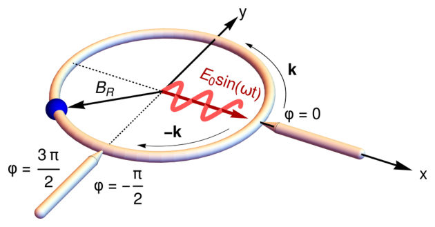
<figcaption class="paper-figure-caption"><b>Fig 1.</b> Figure 1: Sketch of a high-frequency electromagnetic field interacting with an electron</figcaption>
</figure>
<figure class="paper-figure-card">

<figcaption class="paper-figure-caption"><b>Fig 2.</b> Figure 3: Calculated effective transport weights of the three lowest Floquet sidebands,</figcaption>
</figure>
<figure class="paper-figure-card">
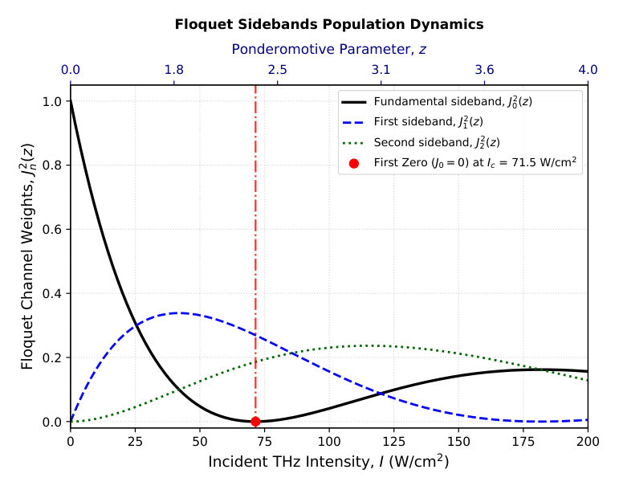
<figcaption class="paper-figure-caption"><b>Fig 3.</b> Fig. 3 map out the field-dependent behavior of the Floquet scattering channels. At weak</figcaption>
</figure>
<figure class="paper-figure-card">
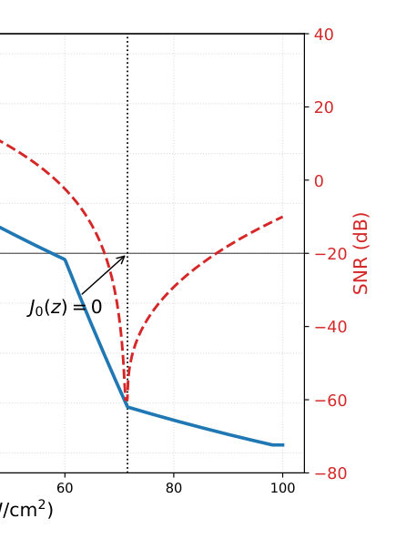
<figcaption class="paper-figure-caption"><b>Fig 4.</b> Figure 4: Calculated non-equilibrium spin polarization 𝑃(𝐼) and the corresponding</figcaption>
</figure>
<figure class="paper-figure-card">
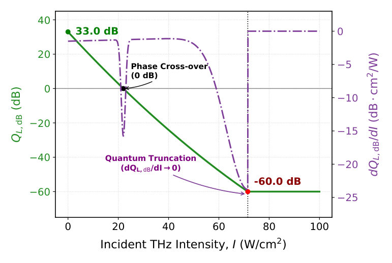
<figcaption class="paper-figure-caption"><b>Fig 5.</b> Figure 5: Calculated non-equilibrium logarithmic Loaded Quality Index 𝑄𝐿,dB (left vertical</figcaption>
</figure>
</div>

<p><strong>Summary.</strong> The paper proposes using THz fields to control spin transport in an asymmetric quantum ring structure, mimicking the function of a spin transistor without physical gates. By leveraging Floquet theory and geometric phase effects, it achieves high-contrast switching and precise spin manipulation. This offers a robust, ultrafast alternative for spintronic devices.</p>
<p><strong>Why it may be interesting.</strong> This work bridges concepts from topological physics (Aharonov-Casher phase), periodically driven systems (Floquet engineering), and mesoscopic transport, offering a novel platform for ultrafast spintronics that avoids static material limitations.</p>
<details>
<summary>Detailed structure</summary>
<p><strong>Main problem.</strong> The research aims to create a high-speed, contactless electromagnetic analog of the Datta–Das spin field-effect transistor using time-varying THz fields.</p>
<p><strong>Main result.</strong> The interplay between topological Aharonov-Casher phase and dynamic Floquet modulation enables both ultra-high-contrast current suppression (an 'optical shutter') and precise spin control in a 1D quantum ring.</p>
<p><strong>Method.</strong> The analysis employs the scattering matrix formalism adapted to the high-frequency Floquet–Magnus expansion, treating the system as an open quantum system coupled to reservoirs.</p>
<p><strong>Model / system.</strong> The physical platform is a 1D quantum ring with an asymmetric ($\pi/2$) configuration of quantum point contacts. The dynamics are governed by a time-dependent Hamiltonian subjected to a linearly polarized THz electric field.</p>
<p><strong>Key observables.</strong> Spin polarization $P(I)$, current suppression contrast, and the evolution of the relative spin phase difference $\Delta\varphi$.</p>
<p><strong>Important parameters / regimes.</strong> THz frequency ($\omega$), Fermi energy ($E_F$), structural asymmetry ratio ($\pi/2$ configuration), and laser intensity ($I$).</p>
<p><strong>Assumptions / limitations.</strong> The analysis relies on the high-frequency limit, utilizing the length gauge transformation to simplify the time dependence via the Floquet-Magnus expansion.</p>
<p><strong>Figures summary.</strong> Figure 1 sketches THz field interaction paths in the ring arms; later sections discuss intensity-driven transport characteristics near exceptional points (EPs).</p>
<p><strong>Paper structure.</strong> The paper progresses from establishing the theoretical framework using the $S$-matrix and Floquet theory to analyzing the effective Hamiltonian, and finally detailing how asymmetry and external driving fields induce spin control via interference effects.</p>
</details>
<details>
<summary>Abstract</summary>
<p>Within the scattering matrix ($S$-matrix) framework adapted to the high-frequency Floquet--Magnus formalism based on the length gauge, we investigate spin-dependent quantum transport in a 1D quantum ring with an asymmetric ($π/2$) configuration of quantum point contacts. We demonstrate the realization of a contactless electromagnetic analog of the Datta--Das spin field-effect transistor with ferromagnetic leads operating at zero static magnetic field. It is shown that an off-resonance terahertz (THz) field enables high-precision switching between spin channels without altering the static parameters of the nanostructure. Driven by an electronic Vernier effect, the quantum interference in the asymmetric geometry yields a selective spin phase rotator alongside an ultra-high-contrast current-suppression regime (``optical shutter''). The proposed architecture is fundamentally robust against multiphoton leakage sidebands, offering a thermally immune, high-speed alternative to conventional semiconductor static spin transistors.</p>
</details>
<p><sub><a href="#top">↑ back to top</a></sub></p>

<p><a id="paper-2607.19589"></a></p>
<h3 id="chiral-magnetic-conductivity-in-the-tight-binding-model-of-dirac-semimetals"><a href="http://arxiv.org/abs/2607.19589v1">Chiral Magnetic Conductivity in the Tight-Binding Model of Dirac Semimetals</a></h3>
<p><strong>Authors:</strong> Mustafa Bohra, Yuexiang Zhang, M. A. Zubkov<br>
<strong>Type:</strong> theory · <strong>Category:</strong> other · <strong>PDF:</strong> <a href="https://arxiv.org/pdf/2607.19589v1">https://arxiv.org/pdf/2607.19589v1</a><br>
<strong>Analysis basis:</strong> full PDF text, analyzed in chunks
<strong>Topic relevance:</strong> 🔥 <code>Keldysh / 2PI / non-Gaussian methods</code> <strong>4/5</strong> · <code>methods for driven-dissipative</code> <strong>3/5</strong> · <code>non-equilibrium dynamics</code> <strong>2/5</strong> · <code>analog quantum simulation</code> <strong>1/5</strong> · <code>driven-dissipative phase transition</code> <strong>1/5</strong> · <code>non-equilibrium universality</code> <strong>1/5</strong></p>
<div class="figure-strip-hint">↔ Scroll figures horizontally</div>
<div class="paper-figures-scroll">
<figure class="paper-figure-card">
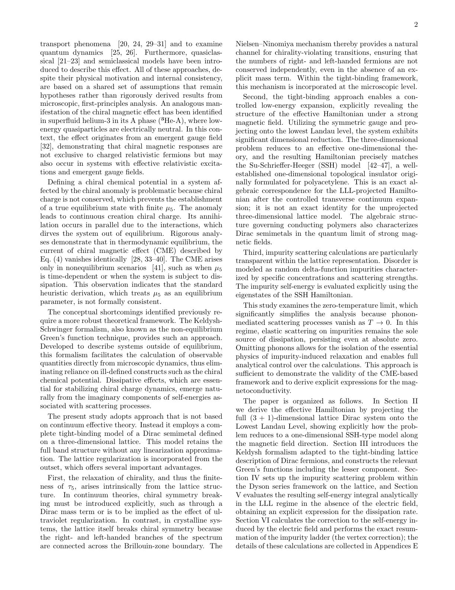
<figcaption class="paper-figure-caption"><b>Fig 1.</b> Low-resolution page preview, page 2</figcaption>
</figure>
<figure class="paper-figure-card">
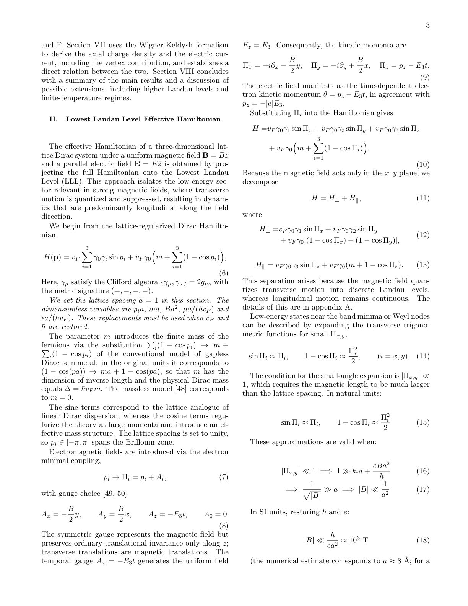
<figcaption class="paper-figure-caption"><b>Fig 2.</b> Low-resolution page preview, page 3</figcaption>
</figure>
<figure class="paper-figure-card">
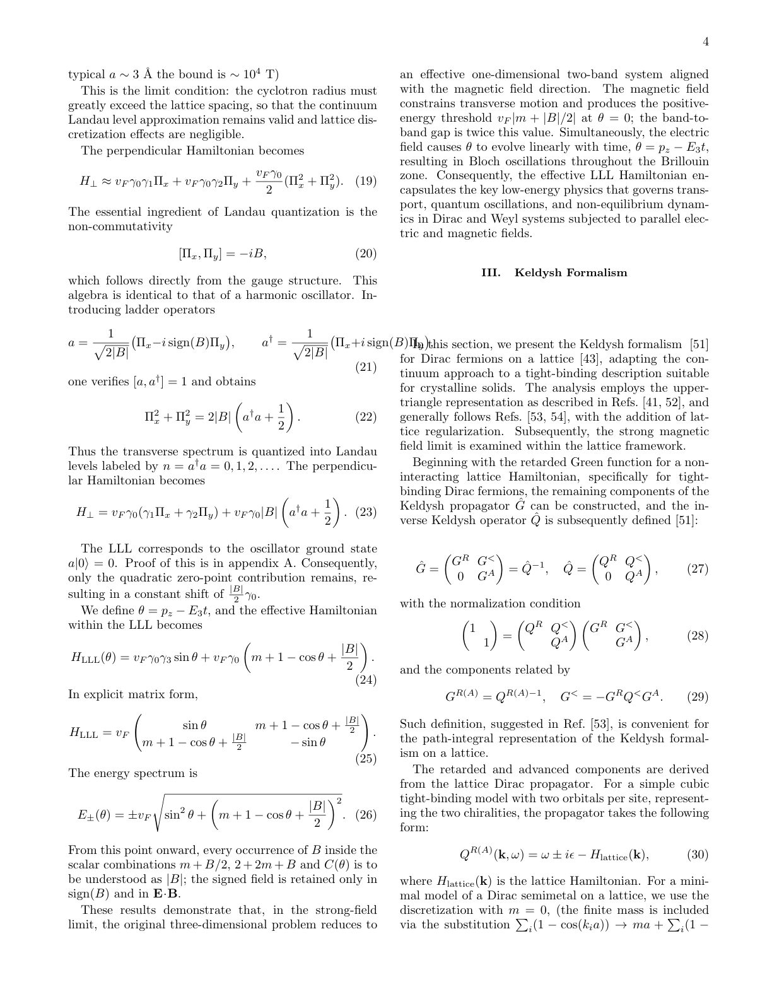
<figcaption class="paper-figure-caption"><b>Fig 3.</b> Low-resolution page preview, page 4</figcaption>
</figure>
<figure class="paper-figure-card">
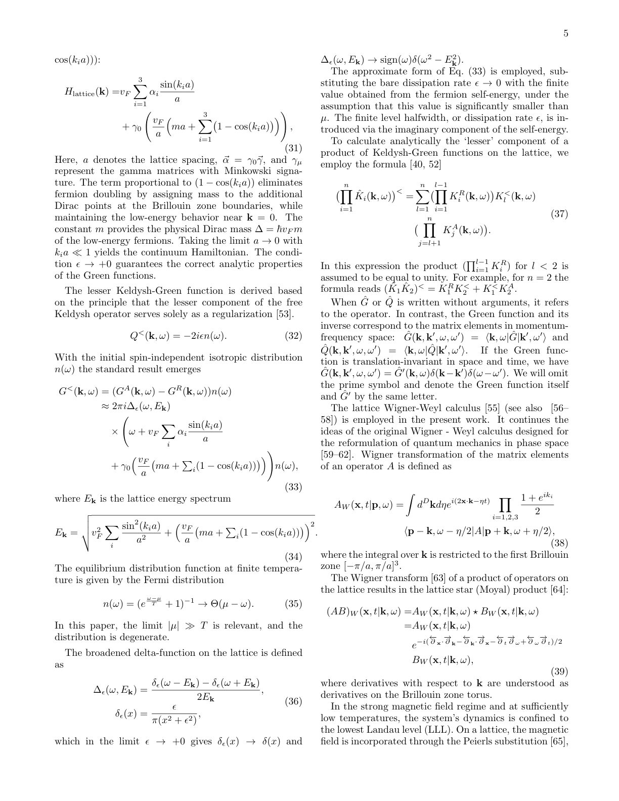
<figcaption class="paper-figure-caption"><b>Fig 4.</b> Low-resolution page preview, page 5</figcaption>
</figure>
<figure class="paper-figure-card">
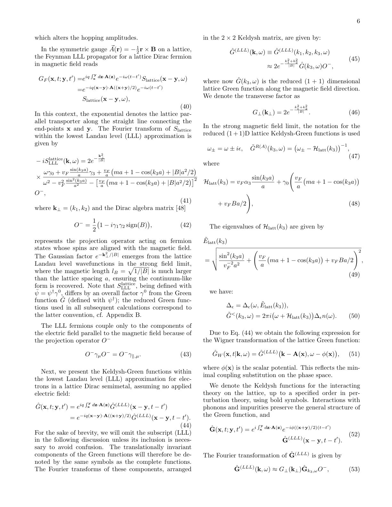
<figcaption class="paper-figure-caption"><b>Fig 5.</b> Low-resolution page preview, page 6</figcaption>
</figure>
</div>

<p><strong>Summary.</strong> This work theoretically analyzes chiral magnetic conductivity in Dirac semimetals using a lattice tight-binding model under combined electric and magnetic fields. By employing the Keldysh formalism and projecting onto the Lowest Landau Level, the authors rigorously demonstrate that the magnetoconductivity originates from the Chiral Magnetic Effect (CME). This provides a robust, non-linear approximation for understanding topological transport phenomena.</p>
<p><strong>Why it may be interesting.</strong> While focused on condensed matter transport, the use of advanced non-equilibrium Green's functions (Keldysh) and Wigner-Weyl calculus provides powerful theoretical tools applicable to open quantum systems dynamics far from equilibrium.</p>
<details>
<summary>Detailed structure</summary>
<p><strong>Main problem.</strong> The study investigates the source of magnetoconductivity, specifically confirming that the Chiral Magnetic Effect (CME) is responsible for the observed dependence on magnetic fields in Dirac semimetals.</p>
<p><strong>Main result.</strong> The lattice-based calculation confirms the CME contribution to conductivity by analyzing the system's response using non-equilibrium Green's functions. The results are derived rigorously within a tight-binding framework, avoiding continuum approximations.</p>
<p><strong>Method.</strong> The analysis employs the Keldysh-Schwinger formalism and Wigner-Weyl calculus on a lattice model. It involves projecting the full Hamiltonian onto the Lowest Landau Level (LLL) to reduce the problem dimensionality.</p>
<p><strong>Model / system.</strong> The system is a Dirac semimetal modeled by a tight-binding Hamiltonian on a 3D lattice, subjected to both magnetic ($\vec{B}$) and electric ($\vec{E}$) fields. The effective model in strong $\vec{B}$ fields reduces to an SSH-like 1D system.</p>
<p><strong>Key observables.</strong> Longitudinal magnetoconductivity ($\sigma_{zz}$), chiral charge density ($
ho_5$), and the CME current formula ($j \propto B$).</p>
<p><strong>Important parameters / regimes.</strong> Strong magnetic field limit, zero temperature ($T 	o 0$), impurity scattering rate ($    au_5^{-1}$).</p>
<p><strong>Assumptions / limitations.</strong> The analysis assumes $T=0$, isolating elastic impurity scattering as the sole source of dissipation. The LLL projection is a key approximation used to simplify the dynamics.</p>
<p><strong>Paper structure.</strong> The paper progresses from defining the full lattice Hamiltonian, projecting it onto the LLL in strong fields, setting up the Keldysh formalism on the lattice, and finally deriving explicit expressions for magnetoconductivity using this robust framework.</p>
</details>
<details>
<summary>Abstract</summary>
<p>We consider the typical tight - binding model of Dirac semimetal in the presence of both magnetic and electric fields. The electric conductivity reveals dependence on magnetic field. We calculate this dependence in the limit of strong magnetic field, when the given model is described effectively by the one - dimensional SSH model because the dynamics in the plane orthogonal to magnetic field is reduced to that of the lowest Landau level (LLL). Considering the small temperature limit we take into account dissipation due to scattering on impurities. The corresponding dissipation rate is calculated explicitly. The obtained results confirm that the source of the magnetoconductivity in this system is chiral magnetic effect.</p>
</details>
<p><sub><a href="#top">↑ back to top</a></sub></p>

<p><a id="paper-2607.19788"></a></p>
<h3 id="nonreciprocal-phonon-propagation-via-spatially-asymmetric-magnon-phonon-coupling"><a href="http://arxiv.org/abs/2607.19788v1">Nonreciprocal phonon propagation via spatially asymmetric magnon-phonon coupling</a></h3>
<p><strong>Authors:</strong> Hiroyuki Moriya, Motoki Asano, Daiki Hatanaka, Yoshitaka Taniyasu, Hajime Okamoto, Hiroshi Yamaguchi<br>
<strong>Type:</strong> both · <strong>Category:</strong> other · <strong>PDF:</strong> <a href="https://arxiv.org/pdf/2607.19788v1">https://arxiv.org/pdf/2607.19788v1</a><br>
<strong>Analysis basis:</strong> full PDF text, analyzed in chunks
<strong>Topic relevance:</strong> 🔥 <code>spintronics-quantum-optics interface</code> <strong>4/5</strong> · <code>correlated / nonlocal dissipation</code> <strong>1/5</strong> · <code>driven-dissipative phase transition</code> <strong>1/5</strong> · <code>exotic spin models in light-matter</code> <strong>1/5</strong> · <code>non-equilibrium dynamics</code> <strong>1/5</strong></p>
<div class="figure-strip-hint">↔ Scroll figures horizontally</div>
<div class="paper-figures-scroll">
<figure class="paper-figure-card">
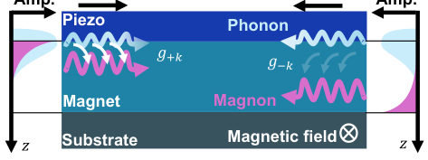
<figcaption class="paper-figure-caption"><b>Fig 1.</b> FIG. 1. Schematic of asymmetric magnomechanical coupling between phonon and magnon propagation with a mode am- plitude (amp.) in the thickness (z) direction.</figcaption>
</figure>
<figure class="paper-figure-card">

<figcaption class="paper-figure-caption"><b>Fig 2.</b> FIG. 2. (a) Schematic illustration of a surface acous- tic wave (SAW) device containing Y3Fe5O12 (YIG) on a Gd3Ga5O12 (GGG) substrate, covered by piezoelectric AlN film. (b) Photograph of the SAW device. The two interdigi- tated transducers (IDTs) are connected to the electrode pads, and the SAW propagates between the IDTs.(c) Representa- tive SAW transmission spectra for S12 (blue) and S21 (red) in the absence of a magnetic field.</figcaption>
</figure>
<figure class="paper-figure-card">

<figcaption class="paper-figure-caption"><b>Fig 3.</b> FIG. 3. (a)-(b) Measured SAW spectra as a function of exter- nal magnetic field µ0Hext and frequency f at angle ϕ = 90◦</figcaption>
</figure>
<figure class="paper-figure-card">

<figcaption class="paper-figure-caption"><b>Fig 4.</b> FIG. 4. (a)-(b) Color maps of SAW absorption signals as functions of external magnetic field µ0Hext and its in-plane angle ϕ for (a) S12 and (b) S21. (c) Color map of the nonre- ciprocity defined as ∆S = |S12 −S21|. (d) Line-cut profiles of ∆S extracted from panel (c) at ϕ = 85◦(orange), 90◦(red) and 95◦(blue).</figcaption>
</figure>
<figure class="paper-figure-card">

<figcaption class="paper-figure-caption"><b>Fig 5.</b> FIG. 5. (a) Magnon and phonon spatial profiles in the thick- ness, z, directions. (b) Transmission ratio between the for- ward and backward proapagations with respect to YIG thick- ness. The yellow star corresponds to the experimental condi- tion.</figcaption>
</figure>
</div>

<p><strong>Summary.</strong> The authors report achieving significant nonreciprocal phonon propagation in a magnetic thin film device by coupling surface acoustic waves to magnon modes. This directionality is shown to stem from the spatial asymmetry of the magnon-phonon interaction, which they model using coupled wave equations. The findings establish a novel, highly efficient strategy for unidirectional acoustic energy transfer.</p>
<p><strong>Why it may be interesting.</strong> This work provides an excellent example of engineered nonreciprocity using magnomechanics, which is highly relevant for developing quantum devices where directional control (e.g., in quantum communication or sensing) is paramount.</p>
<details>
<summary>Detailed structure</summary>
<p><strong>Main problem.</strong> The study demonstrates nonreciprocal propagation of surface acoustic waves (SAWs) by exploiting spatially asymmetric magnon-phonon coupling in a magnomechanical device.</p>
<p><strong>Main result.</strong> A large, direction-dependent absorption contrast ($\Delta S$) was observed, reaching $25.2 	ext{ dB/mm}$, which is theoretically attributed to the interaction with surface-localized magnon modes.</p>
<p><strong>Method.</strong> The research combines experimental measurements of SAW transmission ($S_{12}, S_{21}$) using a VNA with theoretical modeling based on coupled equations of motion for phonon and magnon fields.</p>
<p><strong>Model / system.</strong> The physical platform is an AlN/YIG heterostructure, where the coupling mechanism relies on the spatial asymmetry of magnon modes localized near interfaces due to dipole-dipole interactions.</p>
<p><strong>Key observables.</strong> SAW transmission spectra ($S_{12}$ and $S_{21}$) as functions of external magnetic field ($\mu_0H_{	ext{ext}}$) and angle ($\phi$); the nonreciprocity contrast $\Delta S = |S_{12} - S_{21}|$.</p>
<p><strong>Important parameters / regimes.</strong> The optimal nonreciprocity is achieved at specific external magnetic fields (e.g., $4.2 	ext{ mT}$) and angles ($\phi=90^\circ$); the YIG layer thickness ($5.7 \mu	ext{m}$) is crucial.</p>
<p><strong>Assumptions / limitations.</strong> The nonreciprocity mechanism is primarily governed by coupling to surface-localized magnon modes, which exhibit an exponential decay profile along the film thickness.</p>
<p><strong>Figures summary.</strong> Figures show schematic representations of asymmetric coupling (Fig. 1), device setups and baseline spectra (Fig. 2), field dependence plots showing clear directional dips in $S_{21}$ but not $S_{12}$ (Fig. 3), and color maps illustrating the angle-dependent nonreciprocity contrast $\Delta S$ (Fig. 4).</p>
<p><strong>Paper structure.</strong> The paper progresses from experimental demonstration of large, direction-dependent absorption in a piezo-on-magnet system to theoretical modeling that confirms this effect arises specifically from spatially asymmetric magnon-phonon coupling involving surface modes.</p>
</details>
<details>
<summary>Abstract</summary>
<p>Nonreciprocal propagation of surface acoustic waves (SAWs) based on the spatial asymmetry of magnon-phonon coupling is demonstrated. This nonreciprocity is enabled by an acoustic wavelength scale thick magnetic layer formed under a thin piezoelectric film. In this configuration, magnon modes activated by dipole-dipole interactions are localized near either the top or bottom interface depending on the propagation direction of the SAW. As a result, the spatial overlap between interfacial magnon and surface phonon modes is expected to become direction dependent, in a manner that leads to distinct unidirectional propagation of SAWs. Notably, the resulting nonreciprocity reaches the highest level among those reported for SAW devices based on a single magnetic layer. This finding will establish a new strategy of nonreciprocal acoustic propagation in a structurally simple magnomechanical device.</p>
</details>
<p><sub><a href="#top">↑ back to top</a></sub></p>

<p><a id="paper-2607.19488"></a></p>
<h3 id="electron-induced-formation-of-cmath864math-on-si100-from-acetylene-and-ethylene"><a href="http://arxiv.org/abs/2607.19488v1">Electron-Induced Formation of C$_{2}$ on Si(100) from Acetylene and Ethylene</a></h3>
<p><strong>Authors:</strong> Oliver MacLean, Marc Savoie, Damian G. Allis, Rafik Addou, Ryan Groome, Si Yue Guo, Aru Joy Hill, Alex Inayeh, Hadiya Ma, Cameron J. Mackie, Sheena Ou, Marco Taucer, Denis A. B. Therien, Finley Van Barr, Ryan Yamachika<br>
<strong>Type:</strong> both · <strong>Category:</strong> other · <strong>PDF:</strong> <a href="https://arxiv.org/pdf/2607.19488v1">https://arxiv.org/pdf/2607.19488v1</a><br>
<strong>Analysis basis:</strong> full PDF text, analyzed in chunks
<strong>Topic relevance:</strong> <code>non-equilibrium dynamics</code> <strong>3/5</strong> · <code>driven-dissipative phase transition</code> <strong>2/5</strong> · <code>methods for driven-dissipative</code> <strong>2/5</strong> · <code>non-equilibrium universality</code> <strong>2/5</strong> · <code>Keldysh / 2PI / non-Gaussian methods</code> <strong>1/5</strong> · <code>Kondo &amp; dissipative impurity</code> <strong>1/5</strong> · <code>analog quantum simulation</code> <strong>1/5</strong> · <code>correlated / nonlocal dissipation</code> <strong>1/5</strong> · <code>measurement-induced transitions</code> <strong>1/5</strong> · <code>quantum measurements</code> <strong>1/5</strong></p>
<div class="figure-strip-hint">↔ Scroll figures horizontally</div>
<div class="paper-figures-scroll">
<figure class="paper-figure-card">

<figcaption class="paper-figure-caption"><b>Fig 1.</b> Figure 1: Tunneling-electron-induced molecular displacements of acetylene. All STM images are filled-state, and visualizations below show the position of the acetylene features on the Si lattice. (a,b) A switch from the OD (a) to ID (b) configuration induced by a +3.2 V pulse (average current &gt;10 nA) over the center of the OD feature. (c,d) Long-range migration of OD-C2H2 induced by a +3.6 V pulse (4.6 nA). (e,f) Presumed desorption of OD-C2H2 induced by a +3.6 V pulse (2 nA). No new acetylene was observed within a radius of 6 nm. In each image, vertical lines indicate the center of the dimer rows and horizontal lines show the positions of three adjacent dimers. Imaging parameters: (a,b)...</figcaption>
</figure>
<figure class="paper-figure-card">

<figcaption class="paper-figure-caption"><b>Fig 2.</b> Figure 2: Formation of a new acetylene configuration, interpreted as the under-dimer (UD) geometry, induced by tunneling-electron excitation. (a,b) Empty-state images showing conversion from ID-C2H2 to UD-C2H2 induced by a +3.4 V pulse (0.2 nA). Imaging parameters: (a,b) +2.0 V, 100 pA. See Figure S2 for a visualization of the UD-C2H2 geometry.</figcaption>
</figure>
<figure class="paper-figure-card">

<figcaption class="paper-figure-caption"><b>Fig 3.</b> Figure 3: Formation of C2 by tunneling-electron excitation of acetylene. (a,b) Filled-state STM images showing dehydrogenation, along with a configuration change, of a UD-C2H2 to a new feature in an IR geometry induced by a +3.4 V pulse (4.5 nA). Imaging parameters: (a,b) −1.8 V, 50 pA.</figcaption>
</figure>
<figure class="paper-figure-card">

<figcaption class="paper-figure-caption"><b>Fig 4.</b> Figure 4: Tunneling-electron-induced switching of C2. (a,b) Filled- and empty-state STM images showing the conversion of IR-C2 to OD-C2 by a +4.7 V pulse (&gt;10 nA). The streakiness of the resulting OD- C2 feature is attributed to switching between two tilted orientations of the C2. Both polarities are included to make both the starting IR-C2 and ending OD-C2 features clear. (c,d) Filled-state STM images showing the conversion of IR-C2 to ID-C2 by a +4.7 V pulse (&gt;10 nA). No empty-state image was recorded after the switching because the change is clear from filled-state imaging. Imaging parameters: (a) −2.0 V, 200 pA; +2.6 V, 100 pA (b) −2.4 V, 100 pA; +2.6 V, 100 pA (c) −2.0 V, 100 pA (d)...</figcaption>
</figure>
<figure class="paper-figure-card">

<figcaption class="paper-figure-caption"><b>Fig 5.</b> Figure 5 shows the main acetylene and C2 features and the matching STM simulations. To reduce the possibility of excessive tailoring of the STM simulations to the experiment, the images in Figure 5 are presented with a single bias/energy and a common Z-scale for each polarity and experiment or simulation. A downward shift in magnitude was applied to the simulation energies relative to the experimental biases to account for experimental factors such as band bending32 and theoretical limitations including the absence of dopants and any issues related to the use of molecular proxies. The wider Z-range spanned in the simulated topographies is in part due to inclusion of the edge of the proxy in...</figcaption>
</figure>
</div>

<p><strong>Summary.</strong> This work uses STM and DFT to study how electrons trigger dehydrogenation reactions of adsorbed hydrocarbons ($    ext{C}_2    ext{H}_2$, $    ext{C}_2    ext{H}_4$) on $ ext{Si}(100)$. The key finding is that electron excitation causes the molecules to shed hydrogen atoms, forming stable carbon clusters ($ ext{C}_2$) in several distinct atomic arrangements. This demonstrates a powerful new tool for atomically precise surface functionalization.</p>
<p><strong>Why it may be interesting.</strong> While focused on surface chemistry, the use of controlled electronic excitation (STM bias) to drive chemical reactions is analogous to studying non-equilibrium quantum processes or localized energy deposition effects relevant to open quantum systems.</p>
<details>
<summary>Detailed structure</summary>
<p><strong>Main problem.</strong> The study investigates electron-induced dehydrogenation of adsorbed hydrocarbons ($   ext{C}_2    ext{H}_2$ and $ ext{C}_2    ext{H}_4$) on the $ ext{Si}(100)$ surface to understand the formation of stable $   ext{C}_2$ species.</p>
<p><strong>Main result.</strong> Electron excitation using STM induces configurational switching, migration, and dehydrogenation, leading to the formation of $ ext{C}_2$ in multiple distinct geometries ($    ext{IR-C}_2$, $ ext{OD-C}_2$, $ ext{ID-C}_2$).</p>
<p><strong>Method.</strong> The research combines Scanning Tunneling Microscopy (STM) experiments with Density Functional Theory (DFT) calculations to model the electronic and structural changes.</p>
<p><strong>Model / system.</strong> The physical system is adsorbed acetylene or ethylene on a $    ext{Si}(100)$ surface, studied at cryogenic temperatures ($4 	ext{ K}$). The process involves electron tunneling excitation to drive chemical reactions.</p>
<p><strong>Key observables.</strong> Configurational switching ($   ext{OD} \leftrightarrow     ext{ID}$), dehydrogenation product formation ($  ext{C}_2$), and the observation of multiple stable $    ext{C}_2$ geometries.</p>
<p><strong>Important parameters / regimes.</strong> Excitation biases (e.g., $\ge+3.2 	ext{ V}$, $\ge+4.2 	ext{ V}$), temperature ($4 	ext{ K}$), and applied current/voltage settings for STM.</p>
<p><strong>Assumptions / limitations.</strong> The interpretation relies on DFT simulations that must account for complex surface dynamics like dimer flipping, contrast inversion, and the stability of various adsorption intermediates.</p>
<p><strong>Figures summary.</strong> Figures illustrate molecular displacements (switching, migration) induced by tunneling electrons; other figures show the new asymmetric feature ($ ext{UD}$) and evidence for $    ext{C}_2$ formation in different geometries.</p>
<p><strong>Paper structure.</strong> The paper systematically presents STM observations of initial adsorption configurations, followed by characterization of structural changes upon electron excitation, culminating in the identification and simulation of dehydrogenation products.</p>
</details>
<details>
<summary>Abstract</summary>
<p>Hydrogen Desorption Lithography on Si(100) demonstrates the ability of the Scanning Tunneling Microscope (STM) to create functional atomic-scale structures and devices. The dehydrogenation of adsorbed molecules represents a potential complementary technique that has received little attention. For example, formation of C$_{2}$ could introduce local strain or act as centers for subsequent reactions and would inform positionally controlled mechanosynthesis, an approach with vast potential in surface patterning and functionalization. Here, we studied the electron-induced dehydrogenation of acetylene and ethylene on Si(100) at 4 K using STM. Excitation of acetylene at +3.2 V and above induces configurational switching, including to a new sublayer-bonded geometry previously predicted to be an adsorption precursor, as well as migration and desorption. Excitation also induces dehydrogenation to C$_{2}$. Switching between three observed C$_{2}$ configurations can be induced by excitation at +4.2 V and above. Simulations using density functional theory reproduced the experimental images based on choice of functional, dimer-buckling averaging, and inclusion of diffuse basis functions. In addition, dehydrogenation could be induced using field-emitted electrons on a scale ranging from a single molecule to a radius of &gt;10 nm. These observations highlight the potential of carbon dehydrogenation as an additional tool in Atomically Precise Fabrication (APF).</p>
</details>
<p><sub><a href="#top">↑ back to top</a></sub></p>

<p><a id="paper-2607.20102"></a></p>
<h3 id="frequency-division-multiplexing-in-magnonic-waveguides"><a href="http://arxiv.org/abs/2607.20102v1">Frequency-Division Multiplexing in Magnonic Waveguides</a></h3>
<p><strong>Authors:</strong> Alina-Cristina Bunea, Laurentiu Stoleriu, Giacomo Talmelli, Dan Neculoiu, Christoph Adelmann, Florin Ciubotaru<br>
<strong>Type:</strong> both · <strong>Category:</strong> other · <strong>PDF:</strong> <a href="https://arxiv.org/pdf/2607.20102v1">https://arxiv.org/pdf/2607.20102v1</a><br>
<strong>Analysis basis:</strong> full PDF text, analyzed in chunks
<strong>Topic relevance:</strong> <code>exotic spin models in light-matter</code> <strong>3/5</strong> · <code>spintronics-quantum-optics interface</code> <strong>3/5</strong> · <code>non-equilibrium dynamics</code> <strong>2/5</strong> · <code>Keldysh / 2PI / non-Gaussian methods</code> <strong>1/5</strong> · <code>analog quantum simulation</code> <strong>1/5</strong> · <code>correlated / nonlocal dissipation</code> <strong>1/5</strong> · <code>driven-dissipative phase transition</code> <strong>1/5</strong> · <code>entanglement &amp; information structure</code> <strong>1/5</strong> · <code>methods for driven-dissipative</code> <strong>1/5</strong> · <code>non-equilibrium universality</code> <strong>1/5</strong></p>
<div class="figure-strip-hint">↔ Scroll figures horizontally</div>
<div class="paper-figures-scroll">
<figure class="paper-figure-card">

<figcaption class="paper-figure-caption"><b>Fig 1.</b> FIG. 1. (a) Microscope image of the investigated device and a schematic of the material stack</figcaption>
</figure>
<figure class="paper-figure-card">

<figcaption class="paper-figure-caption"><b>Fig 2.</b> FIG. 2. (a) Microscope image of the investigated device and a schematic of the measurement setup</figcaption>
</figure>
<figure class="paper-figure-card">

<figcaption class="paper-figure-caption"><b>Fig 3.</b> FIG. 3. (a) Measured spin-wave transmission power recorded by VNA-1 with the 12.22 GHz RF</figcaption>
</figure>
<figure class="paper-figure-card">

<figcaption class="paper-figure-caption"><b>Fig 4.</b> FIG. 4. (a) Snapshot images of the magnetization oscillation obtained from micromagnetic simu-</figcaption>
</figure>
</div>

<p><strong>Summary.</strong> This paper experimentally proves that spin waves can be multiplexed using Frequency-Division Multiplexing (FDM) within a single magnetic waveguide. By measuring transmission spectra with multiple simultaneous microwave signals and confirming results via micromagnetic simulations, the authors establish that different frequency channels propagate independently without crosstalk. This work is crucial for advancing future magnonic computing and signal processing architectures.</p>
<p><strong>Why it may be interesting.</strong> While not directly about quantum information processing, the demonstration of controlled wave coexistence in a solid-state system provides an excellent platform for studying linear wave coupling, energy transport, and non-interacting mode propagation—concepts relevant to open quantum systems modeling.</p>
<details>
<summary>Detailed structure</summary>
<p><strong>Main problem.</strong> The research investigates the feasibility of Frequency-Division Multiplexing (FDM) for spin waves, aiming to enable multiple independent information channels within a single physical magnetic waveguide.</p>
<p><strong>Main result.</strong> The authors experimentally and theoretically demonstrate that different frequency spin waves can coexist and propagate simultaneously in the linear regime without measurable interaction or crosstalk.</p>
<p><strong>Method.</strong> The study combines electrical characterization using Vector Network Analyzers (VNAs) for broadband measurements with theoretical analysis based on linear superposition and micromagnetic simulations.</p>
<p><strong>Model / system.</strong> The physical system is a CoFeB magnetic waveguide deposited on Si/SiO2, where spin waves are generated and detected electrically. The behavior is analyzed in the linear regime using established magnetodynamics principles.</p>
<p><strong>Key observables.</strong> Transmission spectra ($S_{21}$), spin-wave power, complex transmission coefficients ($  ext{Re}/    ext{Im}(S_{21})$), spin-wave amplitude, and wavevectors as functions of frequency and propagation distance.</p>
<p><strong>Important parameters / regimes.</strong> Applied magnetic field ($\mu_0H = 43 	ext{ mT}$); operation in the linear regime (low excitation power).</p>
<p><strong>Assumptions / limitations.</strong> The analysis relies heavily on the validity of the superposition principle, assuming negligible nonlinear interactions between co-propagating modes.</p>
<p><strong>Figures summary.</strong> Figures show device schematics and measurement setups using two VNAs. Key plots demonstrate that single-channel and multiplexed transmission spectra agree excellently, and simulations confirm unchanged mode amplitudes during co-propagation.</p>
<p><strong>Paper structure.</strong> The paper proceeds by introducing the FDM concept for magnonics, detailing the experimental setup involving dual-VNA measurements, presenting results showing non-interacting propagation, supporting these findings with theoretical linear superposition analysis, and finally confirming the robustness of the result via micromagnetic simulations.</p>
</details>
<details>
<summary>Abstract</summary>
<p>Frequency-division multiplexing is a key functionality for wave-based information processing, enabling multiple information channels to coexist within the same physical medium. Here, we experimentally investigate spin-wave multiplexing in a CoFeB waveguide using all-electrical excitation and detection. Two independently generated microwave signals are simultaneously coupled into the same spin-wave waveguide through inductive antennas and characterized using broadband vector network analyzer measurements. The transmission spectra obtained under single-channel and multiplexed operation exhibit excellent agreement, demonstrating that spin waves with different frequencies and wavelengths propagate simultaneously without measurable interaction in the linear regime. The observation is confirmed using both dual-sweep and sweep-plus-single-tone excitation schemes. A theoretical analysis based on linear superposition and phase-sensitive detection explains the absence of observable inter-channel interference for independent microwave sources. Micromagnetic simulations further confirm that the amplitudes and wavevectors of the individual spin-wave modes remain unchanged during co-propagation, demonstrating the absence of interaction over the entire propagation distance. The results provide direct experimental evidence that independent spin-wave channels can coexist in a single waveguide and support the implementation of frequency-division multiplexing in future magnonic computing and microwave signal-processing architectures.</p>
</details>
<p><sub><a href="#top">↑ back to top</a></sub></p>

<p><a id="paper-2607.20240"></a></p>
<h3 id="role-of-resonant-math876math-points-in-the-transient-optical-response-of-pumped-germanium"><a href="http://arxiv.org/abs/2607.20240v1">Role of Resonant $\mathbf{k}$-Points in the Transient Optical Response of Pumped Germanium</a></h3>
<p><strong>Authors:</strong> Amir Eskandari-asl, Giacomo Inzani, Matteo Lucchini, Adolfo Avella<br>
<strong>Type:</strong> theory · <strong>Category:</strong> other · <strong>PDF:</strong> <a href="https://arxiv.org/pdf/2607.20240v1">https://arxiv.org/pdf/2607.20240v1</a><br>
<strong>Analysis basis:</strong> full PDF text, analyzed in chunks
<strong>Topic relevance:</strong> <code>Keldysh / 2PI / non-Gaussian methods</code> <strong>3/5</strong> · <code>methods for driven-dissipative</code> <strong>3/5</strong> · <code>non-equilibrium dynamics</code> <strong>2/5</strong> · <code>correlated / nonlocal dissipation</code> <strong>1/5</strong> · <code>driven-dissipative phase transition</code> <strong>1/5</strong> · <code>interference shaping light</code> <strong>1/5</strong> · <code>non-equilibrium universality</code> <strong>1/5</strong></p>
<div class="figure-strip-hint">↔ Scroll figures horizontally</div>
<div class="paper-figures-scroll">
<figure class="paper-figure-card">

<figcaption class="paper-figure-caption"><b>Fig 1.</b> Figure 1. (a) First Brillouin zone of the fcc lattice, with the high-symmetry points. (b) Equilibrium band structure of germanium along the indicated high-symmetry path. The calculation contains the valence, conduction, and semi-core manifolds relevant to the pump and probe transitions. The Γ2 gap is underestimated by approximately 0.5 eV, and the semi-core manifold is displaced relative to experiment.</figcaption>
</figure>
<figure class="paper-figure-card">

<figcaption class="paper-figure-caption"><b>Fig 2.</b> Figure 2. Experimental (a) and calculated (b) non-equilibrium relative differential reflectivity. (c) Calculated differential imaginary part of the dielectric function. All quantities are shown as functions of probe photon energy ℏω and delay time tpr. The calculations in panel (b) reproduce the principal experimental structures and their temporal evolution; the high-energy structures retain an approximately 0.5 eV offset associated with the underestimated ab-initio Γ2 gap.</figcaption>
</figure>
<figure class="paper-figure-card">

<figcaption class="paper-figure-caption"><b>Fig 3.</b> Figure 3 summarizes the momentum-resolved resid- ual excitation population together with its decomposi- tion into multi-photon resonance contributions. Panel (a) shows N res k and its 1-, 2-, and 3-photon components throughout the sampled BZ. As established in our previ- ous work [22, 53], the dominant contribution arises from two-photon transitions. Panel (b) displays the distribution of N res(l) k on a loga- rithmic scale. We use 2×10−6, marked by the red vertical line, as the numerical threshold for assigning a k-point to the corresponding l-photon-resonant set. Throughout this work, we adopt this threshold as the operational cri- terion for identifying resonant momentum points: a point...</figcaption>
</figure>
<figure class="paper-figure-card">

<figcaption class="paper-figure-caption"><b>Fig 4.</b> Figure 3. (a) Momentum-resolved residual excitation population across the FBZ and its decomposition into 1-, 2-, and 3-photon contributions shown as a 3D scatter plot. The diameter of the spheres indicate the actual residual excitation population at the corresponding k-point and scales as it is reported in the legend. (b) Histogram of residual excitation values on a logarithmic scale; the vertical red line at 2 × 10−6 marks the numerical threshold used to identify resonant k-points. (c) Venn diagram showing the relative contributions of different resonance classes to the total residual excitation population. The green shading represents the relative contribution, with quantitative values...</figcaption>
</figure>
<figure class="paper-figure-card">

<figcaption class="paper-figure-caption"><b>Fig 5.</b> Figure 4. Contributions to δℑϵ(ω, tpr) from different classes of k-points: (a) off-resonant k-points only; (b) resonant k-points; (c) k-points with 1-, 2-, or 3-photon resonances; (d) k-points with 2-photon resonances. The resonant k-points nearly reproduce the full response [Fig. 2(c)], whereas the 2-photon-resonant set, despite carrying most of the residual population, does not account for the complete response.</figcaption>
</figure>
</div>

<p><strong>Summary.</strong> The paper investigates the transient optical response of pumped Germanium by decomposing it based on multi-photon resonance conditions across the Brillouin zone. Using advanced linear response theory, the authors show that while most excited carriers reside at 2-photon resonant points, the full optical signal requires contributions from virtual processes beyond just these real-charge excitations. This establishes a powerful momentum-resolved connection between pump resonances and ultrafast optical observables.</p>
<p><strong>Why it may be interesting.</strong> This work provides a sophisticated methodology for dissecting complex many-body responses in solids by mapping physical observables onto specific, quantized momentum-space resonances, which is highly relevant to understanding non-equilibrium quantum dynamics.</p>
<details>
<summary>Detailed structure</summary>
<p><strong>Main problem.</strong> The study aims to resolve the momentum-space origin of transient optical response in pumped Germanium by determining the relative importance of off-resonant versus $l$-photon resonant crystal momenta.</p>
<p><strong>Main result.</strong> The transient optical weight is not solely determined by real-charge dynamics (residual population) but requires substantial virtual pump-induced contributions, although the dominant weight still arises from resonant momentum regions.</p>
<p><strong>Method.</strong> The authors use a Dynamical Projective Operatorial Approach combined with generalized linear response theory to decompose the differential imaginary part of the dielectric function into classes defined by multi-photon resonances.</p>
<p><strong>Model / system.</strong> The system is pumped Germanium, treated as a gapped semiconductor. The analysis involves modeling photo-excited electrons and holes across different momentum states ($k$-points) in the Brillouin zone.</p>
<p><strong>Key observables.</strong> Transient absorptive response ($\delta\Im{\epsilon}(\omega, t_{	ext{pr}})$), residual electronic population ($N_{	ext{res}}$), and the phase of oscillatory components (e.g., $2\omega_{	ext{pu}}$).</p>
<p><strong>Important parameters / regimes.</strong> Pump pulse parameters include $ au_{    ext{pu}} = 13.3     ext{ fs}$ and $\hbar\omega_{	ext{pu}} = 1.55 	ext{ eV}$. A numerical threshold of $2 	imes 10^{-6}$ is used to define resonant k-points.</p>
<p><strong>Assumptions / limitations.</strong> The analysis separates contributions tied to real charge excitation distribution from those associated with virtual processes, although the distinction itself is a focus of investigation.</p>
<p><strong>Figures summary.</strong> Figures compare $\delta\Im{\epsilon}(\omega, t_{	ext{pr}})$ calculated using different subsets of k-points (off-resonant vs. resonant) and show momentum-resolved decomposition by resonance class, alongside time delay analysis for the $2\omega_{	ext{pu}}$ component.</p>
<p><strong>Paper structure.</strong> The paper establishes the need to resolve momentum contributions, develops a theoretical framework based on DPOA/linear response theory, calculates the differential dielectric function using resonance classes (1-, 2-, 3-photon), and finally interprets the mismatch between real-charge dynamics and the full optical signal.</p>
</details>
<details>
<summary>Abstract</summary>
<p>Pump-induced transient optical properties combine contributions from electronic states throughout the Brillouin zone, but the relative relevance of off-resonant and l-photon resonant crystal momenta has remained unexplored. We address this issue in pumped germanium by resolving the transient absorptive response into momentum-space classes defined by the presence or absence of 1-, 2-, and 3-photon resonances with respect to the pump. Using the Dynamical Projective Operatorial Approach together with the related generalized linear response theory, we compute the differential imaginary part of the dielectric function and evaluate the contributions of each resonance class. Resonant regions account for nearly the entire optical response, whereas points outside the identified resonance sets contribute only negligibly. Nevertheless, the 2-photon-resonant set, although containing more than 98% of the residual (post-pump) excitation population, does not reproduce the full transient spectrum. Conversely, resonance classes with very small residual populations generate non-negligible contributions to the transient optical properties. This mismatch shows that the transient optical weight is not determined solely by the real-charge dynamics (which results in post-pulse residual excitation population) and is consistent with substantial virtual pump-induced contributions, whose dominant optical weight nevertheless arises from the resonant regions of momentum space. The class-resolved phase of the dominant 2$ω_{\mathrm{pu}}$ oscillations further shows that, whenever a class contributes appreciably, the phase of its oscillatory component follows that of the corresponding full signal. The resulting decomposition provides a momentum-resolved connection among multi-photon resonances and transient optical observables in a realistic material.</p>
</details>
<p><sub><a href="#top">↑ back to top</a></sub></p>
<hr>
<p>
<a href="index.html">← Index</a>
 · <a href="papers_04.html">← Previous</a> · <a href="papers_06.html">Next →</a>
</p>
<hr>

</body>
</html>
